ABSTRACT
H.E. Bal
Vrije Universiteit
Wiskundig Seminarium, Amsterdam
The EM Global Optimizer is part of the Amsterdam Compiler Kit, a toolkit for making retargetable compilers. It optimizes the intermediate code common to all compilers of the toolkit (EM), so it can be used for all programming languages and all processors supported by the kit.
The optimizer is based on well-understood concepts like control flow analysis and data flow analysis. It performs the following optimizations: Inline Substitution, Strength Reduction, Common Subexpression Elimination, Stack Pollution, Cross Jumping, Branch Optimization, Copy Propagation, Constant Propagation, Dead Code Elimination and Register Allocation.
This report describes the design of the optimizer and several of its implementation issues.
The EM Global Optimizer is part of a software toolkit for making production-quality retargetable compilers. This toolkit, called the Amsterdam Compiler Kit [Tane81a, Tane83b] runs under the Unix*
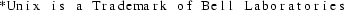
operating system.
The main design philosophy of the toolkit is to use a
language- and machine-independent intermediate code, called
EM. [Tane83a] The basic compilation process can be split up
into two parts. A language-specific front end translates the
source program into EM. A machine-specific back end
transforms EM to assembly code of the target machine.
The global optimizer is an optional phase of the compilation process, and can be used to obtain machine code of a higher quality. The optimizer transforms EM-code to better EM-code, so it comes between the front end and the back end. It can be used with any combination of languages and machines, as far as they are supported by the compiler kit.
This report describes the design of the global optimizer and several of its implementation issues. Measurements can be found in. [Bal86a]
The EM Global Optimizer is one of three optimizers that are part of the Amsterdam Compiler Kit (ACK). The phases of ACK are:
|
1. |
A Front End translates a source program to EM |
|
2. |
The Peephole Optimizer [a] reads EM code and produces ’better’ EM code. It performs a number of optimizations (mostly peephole optimizations) such as constant folding, strength reduction and unreachable code elimination. |
|
3. |
The Global Optimizer further improves the EM code. |
|
4. |
The Code Generator transforms EM to assembly code of the target computer. |
|
5. |
The Target Optimizer improves the assembly code. |
|
6. |
An Assembler/Loader generates an executable file. |
For a more extensive overview of the ACK compilation process, we refer to. [Tane81a, Tane83b]
The input of the Global Optimizer may consist of files and libraries. Every file or module in the library must contain EM code in Compact Assembly Language format. [Tane83a, section 11.2] The output consists of one such EM file. The input files and libraries together need not constitute an entire program, although as much of the program as possible should be supplied. The more information about the program the optimizer gets, the better its output code will be.
The Global Optimizer is language- and machine-independent, i.e. it can be used for all languages and machines supported by ACK. Yet, it puts some unavoidable restrictions on the EM code produced by the Front End (see below). It must have some knowledge of the target machine. This knowledge is expressed in a machine description table which is passed as argument to the optimizer. This table does not contain very detailed information about the target (such as its instruction set and addressing modes).
The definition of EM, the intermediate code of all ACK compilers, is given in a separate document. [Tane83a] We will only discuss some features of EM that are most relevant to the Global Optimizer.
EM is the assembly code of a virtual stack machine. All operations are performed on the top of the stack. For example, the statement "A := B + 3" may be expressed in EM as:

So EM is essentially a postfix code.
EM has a rich instruction set, containing several arithmetic and logical operators. It also contains special-case instructions (such as INCrement).
EM has global (external) variables, accessible by all procedures and local variables, accessible by a few (nested) procedures. The local variables of a lexically enclosing procedure may be accessed via a static link. EM has instructions to follow the static chain. There are EM instruction to allow a procedure to access its local variables directly (such as LOL and STL above). Local variables are referenced via an offset in the stack frame of the procedure, rather than by their names (e.g. -2 and -4 above). The EM code does not contain the (source language) type of the variables.
All structured statements in the source program are expressed in low level jump instructions. Besides conditional and unconditional branch instructions, there are two case instructions (CSA and CSB), to allow efficient translation of case statements.
As the optimizer should be useful for all languages, it clearly should not put severe restrictions on the EM code of the input. There is, however, one immovable requirement: it must be possible to determine the flow of control of the input program. As virtually all global optimizations are based on control flow information, the optimizer would be totally powerless without it. For this reason we restrict the usage of the case jump instructions (CSA/CSB) of EM. Such an instruction is always called with the address of a case descriptor on top the the stack. [Tane83a section 7.4] This descriptor contains the labels of all possible destinations of the jump. We demand that all case descriptors are allocated in a global data fragment of type ROM, i.e. the case descriptors may not be modifyable. Furthermore, any case instruction should be immediately preceded by a LAE (Load Address External) instruction, that loads the address of the descriptor, so the descriptor can be uniquely identified.
The optimizer will work improperly if the user deceives the control flow. We will give two methods to do this.
In "C" the notorious library routines "setjmp" and "longjmp" [Kern79a] may be used to jump out of a procedure, but can also be used for a number of other stuffy purposes, for example, to create an extra entry point in a loop.
while (condition) {
}
...
longjmp(buf);
The invocation to longjmp actually is a jump to the place of the last call to setjmp with the same argument (buf). As the calls to setjmp and longjmp are indistinguishable from normal procedure calls, the optimizer will not see the danger. No need to say that several loop optimizations will behave unexpectedly when presented with such pathological input.
Another way to deceive the flow of control is by using exception handling routines. Ada*

has clearly recognized the dangers of exception handling, but other languages (such as PL/I) have not. [Ichb79a]
The optimizer will be more effective if the EM input contains some extra information about the source program. Especially the register message is very important. These messages indicate which local variables may never be accessed indirectly. Most optimizations benefit significantly by this information.
The Inline Substitution technique needs to know how many bytes of formal parameters every procedure accesses. Only calls to procedures for which the EM code contains this information will be substituted in line.
The Global Optimizer is organized as a number of phases, each one performing some task. The main structure is as follows:
|
IC |
the Intermediate Code construction phase transforms EM into the intermediate code (ic) of the optimizer |
|
CF |
the Control Flow phase extends the ic with control flow information and interprocedural information |
|
OPTs |
zero or more optimization phases, each one performing one or more related optimizations |
|
CA |
the Compact Assembly phase generates Compact Assembly Language EM code out of ic. |
An important issue in the design of a global optimizer is the interaction between optimization techniques. It is often advantageous to combine several techniques in one algorithm that takes into account all interactions between them. Ideally, one single algorithm should be developed that does all optimizations simultaneously and deals with all possible interactions. In practice, such an algorithm is still far out of reach. Instead some rather ad hoc (albeit important) combinations are chosen, such as Common Subexpression Elimination and Register Allocation. [Prab80a, Seth70a]
In the Em Global Optimizer there is one separate algorithm for every technique. Note that this does not mean that all techniques are independent of each other.
In principle, the optimization phases can be run in any order; a phase may even be run more than once. However, the following rules should be obeyed:
|
- |
the Live Variable analysis phase (LV) must be run prior to Register Allocation (RA), as RA uses information outputted by LV. |
|
- |
RA should be the last phase; this is a consequence of the way the interface between RA and the Code Generator is defined. |
The ordering of the phases has significant impact on the quality of the produced code. In [Leve79a] two kinds of phase ordering problems are distinguished. If two techniques A and B both take away opportunities of each other, there is a "negative" ordering problem. If, on the other hand, both A and B introduce new optimization opportunities for each other, the problem is called "positive". In the Global Optimizer the following interactions must be taken into account:
|
- |
Inline Substitution (IL) may create new opportunities for most other techniques, so it should be run as early as possible |
|
- |
Use Definition analysis (UD) may introduce opportunities for LV. |
|
- |
Strength Reduction may create opportunities for UD |
The optimizer has a default phase ordering, which can be changed by the user.
The remaining chapters of this document each describe one phase of the optimizer. For every phase, we describe its task, its design, its implementation, and its source files. The latter two sections are intended to aid the maintenance of the optimizer and can be skipped by the initial reader.
There are very few modern textbooks on optimization. Chapters 12, 13, and 14 of [Aho78a] are a good introduction to the subject. Wulf et. al. [Wulf75a] describe one specific optimizing (Bliss) compiler. Anklam et. al. [Ankl82a] discuss code generation and optimization in compilers for one specific machine (a Vax-11). Kirchgaesner et. al. [Kirc83a] present a brief description of many optimizations; the report also contains a lengthy (over 60 pages) bibliography.
The number of articles on optimization is quite impressive. The Lowry and Medlock paper on the Fortran H compiler [Lowr69a] is a classical one. Other papers on global optimization are. [Faim80a, Perk79a, Harr79a, More79a, Mint79a] Freudenberger [Freu83a] describes an optimizer for a Very High Level Language (SETL). The Production-Quality Compiler-Compiler (PQCC) project uses very sophisticated compiler techniques, as described in. [Leve80a, Leve79a, Wulf80a]
Several Ph.D. theses are dedicated to optimization. Davidson [Davi81a] outlines a machine-independent peephole optimizer that improves assembly code. Katkus [Katk73a] describes how efficient programs can be obtained at little cost by optimizing only a small part of a program. Photopoulos [Phot81a] discusses the idea of generating interpreted intermediate code as well as assembly code, to obtain programs that are both small and fast. Shaffer [Shaf78a] describes the theory of automatic subroutine generation. Leverett [Leve81a] deals with register allocation in the PQCC compilers.
References to articles about specific optimization techniques will be given in later chapters.
In this chapter the intermediate code of the EM global optimizer will be defined. The ’Intermediate Code construction’ phase (IC), which builds the initial intermediate code from EM Compact Assembly Language, will be described.
The EM global optimizer is a multi pass program, hence there is a need for an intermediate code. Usually, programs in the Amsterdam Compiler Kit use the Compact Assembly Language format [Tane83a, section 11.2] for this purpose. Although this code has some convenient features, such as being compact, it is quite unsuitable in our case, because of a number of reasons. At first, the code lacks global information about whole procedures or whole basic blocks. Second, it uses identifiers (’names’) to bind defining and applied occurrences of procedures, data labels and instruction labels. Although this is usual in high level programming languages, it is awkward in an intermediate code that must be read many times. Each pass of the optimizer would have to incorporate an identifier look-up mechanism to associate a defining occurrence with each applied occurrence of an identifier. Finally, EM programs are used to declare blocks of bytes, rather than variables. A ’hol 6’ instruction may be used to declare three 2-byte variables. Clearly, the optimizer wants to deal with variables, and not with rows of bytes.
To overcome these problems, we have developed a new intermediate code. This code does not merely consist of the EM instructions, but also contains global information in the form of tables and graphs. Before describing the intermediate code we will first leap aside to outline the problems one generally encounters when trying to store complex data structures such as graphs outside the program, i.e. in a file. We trust this will enhance the comprehensibility of the intermediate code definition and the design and implementation of the IC phase.
Most programmers are quite used to deal with complex data structures, such as arrays, graphs and trees. There are some particular problems that occur when storing such a data structure in a sequential file. We call data that is kept in main memory internal ,as opposed to external data that is kept in a file outside the program.
We assume a simple data structure of a scalar type (integer, floating point number) has some known external representation. An array having elements of a scalar type can be represented externally easily, by successively representing its elements. The external representation may be preceded by a number, giving the length of the array. Now, consider a linear, singly linked list, the elements of which look like:
record
data: scalar_type;
next: pointer_type;
end;
It is significant to note that the "next" fields of the elements only have a meaning within main memory. The field contains the address of some location in main memory. If a list element is written to a file in some program, and read by another program, the element will be allocated at a different address in main memory. Hence this address value is completely useless outside the program.
One may represent the list by ignoring these "next" fields and storing the data items in the order they are linked. The "next" fields are represented implicitly. When the file is read again, the same list can be reconstructed. In order to know where the external representation of the list ends, it may be useful to put the length of the list in front of it.
Note that arrays and linear lists have the same external representation.
A doubly linked, linear list, with elements of the type:
record
data: scalar_type;
next,
previous: pointer_type;
end
can be represented in precisely the same way. Both the "next" and the "previous" fields are represented implicitly.
Next, consider a binary tree, the nodes of which have type:
record
data: scalar_type;
left,
right: pointer_type;
end
Such a tree can be represented sequentially, by storing its nodes in some fixed order, e.g. prefix order. A special null data item may be used to denote a missing left or right son. For example, let the scalar type be integer, and let the null item be 0. Then the tree of fig. 3.1(a) can be represented as in fig. 3.1(b).
4
/ \
9 12
/ \ / \
12 3 4 6
/ \ \ /
8 1 5 1
Fig. 3.1(a) A binary tree
4 9 12 0 0 3 8 0 0 1 0 0 12 4 0 5 0 0 6 1 0 0 0
Fig. 3.1(b) Its sequential representation
We are still able to represent the pointer fields ("left" and "right") implicitly.
Finally, consider a general graph , where each node has a "data" field and pointer fields, with no restriction on where they may point to. Now we’re at the end of our tale. There is no way to represent the pointers implicitly, like we did with lists and trees. In order to represent them explicitly, we use the following scheme. Every node gets an extra field, containing some unique number that identifies the node. We call this number its id. A pointer is represented externally as the id of the node it points to. When reading the file we use a table that maps an id to the address of its node. In general this table will not be completely filled in until we have read the entire external representation of the graph and allocated internal memory locations for every node. Hence we cannot reconstruct the graph in one scan. That is, there may be some pointers from node A to B, where B is placed after A in the sequential file than A. When we read the node of A we cannot map the id of B to the address of node B, as we have not yet allocated node B. We can overcome this problem if the size of every node is known in advance. In this case we can allocate memory for a node on first reference. Else, the mapping from id to pointer cannot be done while reading nodes. The mapping can be done either in an extra scan or at every reference to the node.
The intermediate code of the optimizer consists of several components:
|
- |
the object table |
|
- |
the procedure table |
|
- |
the em code |
|
- |
the control flow graphs |
|
- |
the loop table |
These components are described in the next sections. The syntactic structure of every component is described by a set of context free syntax rules, with the following conventions:

EM programs declare blocks of bytes rather than (global) variables. A typical program may declare ’HOL 7780’ to allocate space for 8 I/O buffers, 2 large arrays and 10 scalar variables. The optimizer wants to deal with objects like variables, buffers and arrays and certainly not with huge numbers of bytes. Therefore the intermediate code contains information about which global objects are used. This information can be obtained from an EM program by just looking at the operands of instruction such as LOE, LAE, LDE, STE, SDE, INE, DEE and ZRE.
The object table consists of a list of datablock entries. Each such entry represents a declaration like HOL, BSS, CON or ROM. There are five kinds of datablock entries. The fifth kind, UNKNOWN, denotes a declaration in a separately compiled file that is not made available to the optimizer. Each datablock entry contains the type of the block, its size, and a description of the objects that belong to it. If it is a rom, it also contains a list of values given as arguments to the rom instruction, provided that this list contains only integer numbers. An object has an offset (within its datablock) and a size. The size need not always be determinable. Both datablock and object contain a unique identifying number (see previous section for their use).
syntax
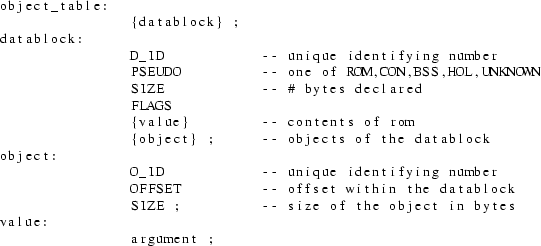
A data block has only one flag: "external", indicating whether the data label is externally visible. The syntax for "argument" will be given later on (see em_text).
The procedure table contains global information about all procedures that are made available to the optimizer and that are needed by the EM program. (Library units may not be needed, see section 3.5). The table has one entry for every procedure.
syntax

The number of bytes of formal parameters accessed by a
procedure is determined by the front ends and passed via a
message (parameter message) to the optimizer. If the front
end is not able to determine this number (e.g. the parameter
may be an array of dynamic size or the procedure may have a
variable number of arguments) the attribute contains the
value ’UNKNOWN_SIZE’.
A procedure has the following flags:
|
- |
external: true if the proc. is externally visible |
|
- |
bodyseen: true if its code is available as EM text |
|
- |
calunknown: true if it calls a procedure that has its bodyseen flag not set |
|
- |
environ: true if it uses or changes a (non-global) variable in a lexically enclosing procedure |
|
- |
lpi: true if is used as operand of an lpi instruction, so it may be called indirect |
The change and use attributes both have one flag: "indirect", indicating whether the procedure does a ’use indirect’ or a ’store indirect’ (indirect means through a pointer).
The EM text contains the EM instructions. Every EM instruction has an operation code (opcode) and 0 or 1 operands. EM pseudo instructions can have more than 1 operand. The opcode is just a small (8 bit) integer.
There are several kinds of operands, which we will refer to as types. Many EM instructions can have more than one type of operand. The types and their encodings in Compact Assembly Language are discussed extensively in. [Tane83a, section 11.2] Of special interest is the way numeric values are represented. Of prime importance is the machine independency of the representation. Ultimately, one could store every integer just as a string of the characters ’0’ to ’9’. As doing arithmetic on strings is awkward, Compact Assembly Language allows several alternatives. The main idea is to look at the value of the integer. Integers that fit in 16, 32 or 64 bits are represented as a row of resp. 2, 4 and 8 bytes, preceded by an indication of how many bytes are used. Longer integers are represented as strings; this is only allowed within pseudo instructions, however. This concept works very well for target machines with reasonable word sizes. At present, most ACK software cannot be used for word sizes higher than 32 bits, although the handles for using larger word sizes are present in the design of the EM code. In the intermediate code we essentially use the same ideas. We allow three representations of integers.
|
- |
integers that fit in a short are represented as a short |
|
- |
integers that fit in a long but not in a short are represented as longs |
|
- |
all remaining integers are represented as strings (only allowed in pseudos). |
The terms short and long are defined in [Ritc78a, section 4] and depend only on the source machine (i.e. the machine on which ACK runs), not on the target machines. For historical reasons a long will often be called an offset.
Operands can also be instruction labels, objects or procedures. Instruction labels are denoted by a label identifier, which can be distinguished from a normal identifier.
The operand of a pseudo instruction can be a list of arguments. Arguments can have the same type as operands, except for the type short, which is not used for arguments. Furthermore, an argument can be a string or a string representation of a signed integer, unsigned integer or floating point number. If the number of arguments is not fully determined by the pseudo instruction (e.g. a ROM pseudo can have any number of arguments), then the list is terminated by a special argument of type CEND.
syntax
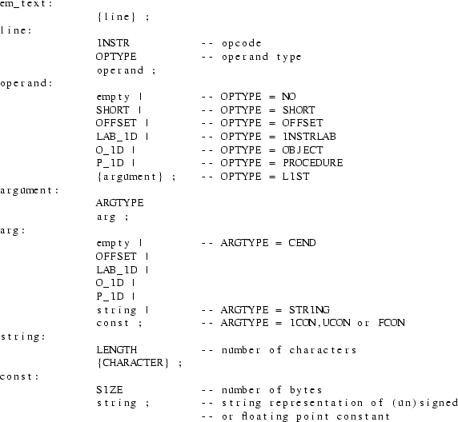
Each procedure can be divided into a number of basic blocks. A basic block is a piece of code with no jumps in, except at the beginning, and no jumps out, except at the end.
Every basic block has a set of successors, which are basic blocks that can follow it immediately in the dynamic execution sequence. The predecessors are the basic blocks of which this one is a successor. The successor and predecessor attributes of all basic blocks of a single procedure are said to form the control flow graph of that procedure.
Another important attribute is the immediate dominator. A basic block B dominates a block C if every path in the graph from the procedure entry block to C goes through B. The immediate dominator of C is the closest dominator of C on any path from the entry block. (Note that the dominator relation is transitive, so the immediate dominator is well defined.)
A basic block also has an attribute containing the identifiers of every loop that the block belongs to (see next section for loops).
syntax

The flag bits can have the values ’firm’ and ’strong’, which are explained below.
Every procedure has an associated loop table containing information about all the loops in the procedure. Loops can be detected by a close inspection of the control flow graph. The main idea is to look for two basic blocks, B and C, for which the following holds:
|
- |
B is a successor of C |
|
- |
B is a dominator of C |
B is called the loop entry and C is called the loop end. Intuitively, C contains a jump backwards to the beginning of the loop (B).
A loop L1 is said to be nested within loop L2 if all basic blocks of L1 are also part of L2. It is important to note that loops could originally be written as a well structured for -or while loop or as a messy goto loop. Hence loops may partly overlap without one being nested inside the other. The nesting level of a loop is the number of loops in which it is nested (so it is 0 for an outermost loop). The details of loop detection will be discussed later.
It is often desirable to know whether a basic block gets executed during every iteration of a loop. This leads to the following definitions:
|
- |
A basic block B of a loop L is said to be a firm block of L if B is executed on all successive iterations of L, with the only possible exception of the last iteration. |
|
- |
A basic block B of a loop L is said to be a strong block of L if B is executed on all successive iterations of L. |
Note that a strong block is also a firm block. If a block is part of a conditional statement, it is neither strong nor firm, as it may be skipped during some iterations (see Fig. 3.2).
loop
if cond1 then
|
-- result in a firm or strong block |
end if;
... -- strong (always executed)
exit when cond2;
... -- firm (not executed on last iteration).
end loop;
Fig. 3.2 Example of firm and strong block
syntax

The syntax of the intermediate code was given in the previous section. In this section we will make some remarks about the representation of the code in sequential files.
We use sequential files in order to avoid the bookkeeping of complex file indices. As a consequence of this decision we can’t store all components of the intermediate code in one file. If a phase wishes to change some attribute of a procedure, or wants to add or delete entire procedures (inline substitution may do the latter), the procedure table will only be fully updated after the entire EM text has been scanned. Yet, the next phase undoubtedly wants to read the procedure table before it starts working on the EM text. Hence there is an ordering problem, which can be solved easily by putting the procedure table in a separate file. Similarly, the data block table is kept in a file of its own.
The control flow graphs (CFGs) could be mixed with the EM text. Rather, we have chosen to put them in a separate file too. The control flow graph file should be regarded as a file that imposes some structure on the EM-text file, just as an overhead sheet containing a picture of a Flow Chart may be put on an overhead sheet containing statements. The loop tables are also put in the CFG file. A loop imposes an extra structure on the CFGs and hence on the EM text. So there are four files:
|
- |
the EM-text file |
|
- |
the procedure table file |
|
- |
the object table file |
|
- |
the CFG and loop tables file |
Every table is preceded by its length, in order to tell where it ends. The CFG file also contains the number of instructions of every basic block, indicating which part of the EM text belongs to that block.
syntax

The first phase of the global optimizer, called IC, constructs a major part of the intermediate code. To be specific, it produces:
|
- |
the EM text |
|
- |
the object table |
|
- |
part of the procedure table |
The calling, change and use attributes of a procedure and all its flags except the external and bodyseen flags are computed by the next phase (Control Flow phase).
As explained before, the intermediate code does not contain any names of variables or procedures. The normal identifiers are replaced by identifying numbers. Yet, the output of the global optimizer must contain normal identifiers, as this output is in Compact Assembly Language format. We certainly want all externally visible names to be the same in the input as in the output, because the optimized EM module may be a library unit, used by other modules. IC dumps the names of all procedures and data labels on two files:
|
- |
the procedure dump file, containing tuples (P_ID, procedure name) |
|
- |
the data dump file, containing tuples (D_ID, data label name) |
The names of instruction labels are not dumped, as they are not visible outside the procedure in which they are defined.
The input to IC consists of one or more files. Each file is either an EM module in Compact Assembly Language format, or a Unix archive file (library) containing such modules. IC only extracts those modules from a library that are needed somehow, just as a linker does. It is advisable to present as much code of the EM program as possible to the optimizer, although it is not required to present the whole program. If a procedure is called somewhere in the EM text, but its body (text) is not included in the input, its bodyseen flag in the procedure table will still be off. Whenever such a procedure is called, we assume the worst case for everything; it will change and use all variables it has access to, it will call every procedure etc.
Similarly, if a data label is used but not defined, the PSEUDO attribute in its data block will be set to UNKNOWN.
Part of the code for the EM Peephole Optimizer [b] has been used for IC. Especially the routines that read and unravel Compact Assembly Language and the identifier lookup mechanism have been used. New code was added to recognize objects, build the object and procedure tables and to output the intermediate code.
IC uses singly linked linear lists for both the procedure and object table. Hence there are no limits on the size of such a table (except for the trivial fact that it must fit in main memory). Both tables are outputted after all EM code has been processed. IC reads the EM text of one entire procedure at a time, processes it and appends the modified code to the EM text file. EM code is represented internally as a doubly linked linear list of EM instructions.
Objects are recognized by looking at the operands of instructions that reference global data. If we come across the instructions:
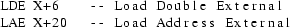
we conclude that the data block preceded by the data label X contains an object at offset 6 of size twice the word size, and an object at offset 20 of unknown size.
A data block entry of the object table is allocated at the first reference to a data label. If this reference is a defining occurrence or a INA pseudo instruction, the label is not externally visible [Tane83a, section 11.1.4.3] In this case, the external flag of the data block is turned off. If the first reference is an applied occurrence or a EXA pseudo instruction, the flag is set. We record this information, because the optimizer may change the order of defining and applied occurrences. The INA and EXA pseudos are removed from the EM text. They may be regenerated by the last phase of the optimizer.
Similar rules hold for the procedure table and the INP and EXP pseudos.
The source files of IC consist of the files ic.c, ic.h and several packages. ic.h contains type definitions, macros and variable declarations that may be used by ic.c and by every package. ic.c contains the definitions of these variables, the procedure main and some high level I/O routines used by main.
Every package xxx consists of two files. ic_xxx.h contains type definitions, macros, variable declarations and procedure declarations that may be used by every .c file that includes this .h file. The file ic_xxx.c provides the definitions of these variables and the implementation of the declared procedures. IC uses the following packages:
|
lookup: |
procedures that loop up procedure, data label and instruction label names; procedures to dump the procedure and data label names. |
|
lib: |
one procedure that gets the next useful input module; while scanning archives, it skips unnecessary modules. |
|
aux: |
several auxiliary routines. |
|
io: |
low-level I/O routines that unravel the Compact Assembly Language. |
|
put: |
routines that output the intermediate code |
In the previous chapter we described the intermediate code of the global optimizer. We also specified which part of this code was constructed by the IC phase of the optimizer. The Control Flow Phase (CF) does the remainder of the job, i.e. it determines:
|
- |
the control flow graphs |
|
- |
the loop tables |
|
- |
the calling, change and use attributes of the procedure table entries |
CF operates on one procedure at a time. For every procedure it first reads the EM instructions from the EM-text file and groups them into basic blocks. For every basic block, its successors and predecessors are determined, resulting in the control flow graph. Next, the immediate dominator of every basic block is computed. Using these dominators, any loop in the procedure is detected. Finally, interprocedural analysis is done, after which we will know the global effects of every procedure call on its environment.
CF uses the same internal data structures for the procedure table and object table as IC.
With regard to flow of control, we distinguish three kinds of EM instructions: jump instructions, instruction label definitions and normal instructions. Jump instructions are all conditional or unconditional branch instructions, the case instructions (CSA/CSB) and the RET (return) instruction. A procedure call (CAL) is not considered to be a jump. A defining occurrence of an instruction label is regarded as an EM instruction.
An instruction starts a new basic block, in any of the following cases:
|
1. |
It is the first instruction of a procedure |
|
2. |
It is the first of a list of instruction label defining occurrences |
|
3. |
It follows a jump |
If there are several consecutive instruction labels (which is highly unusual), all of them are put in the same basic block. Note that several cases may overlap, e.g. a label definition at the beginning of a procedure or a label following a jump.
A simple Finite State Machine is used to model the above rules. It also recognizes the end of a procedure, marked by an END pseudo. The basic blocks are stored internally as a doubly linked linear list. The blocks are linked in textual order. Every node of this list has the attributes described in the previous chapter (see syntax rule for basic_block). Furthermore, every node contains a pointer to its EM instructions, which are represented internally as a linear, doubly linked list, just as in the IC phase. However, instead of one list per procedure (as in IC) there is now one list per basic block.
On the fly, a table is build that maps every label identifier to the label definition instruction. This table is used for computing the control flow. The table is stored as a dynamically allocated array. The length of the array is the number of labels of the current procedure; this value can be found in the procedure table, where it was stored by IC.
A successor of a basic block B is a block C that can be executed immediately after B. C is said to be a predecessor of B. A block ending with a RET instruction has no successors. Such a block is called a return block. Any block that has no predecessors cannot be executed at all (i.e. it is unreachable), unless it is the first block of a procedure, called the procedure entry block.
Internally, the successor and predecessor attributes of a basic block are stored as sets. Alternatively, one may regard all these sets of all basic blocks as a conceptual graph, in which there is an edge from B to C if C is in the successor set of B. We call this conceptual graph the Control Flow Graph.
The only successor of a basic block ending on an unconditional branch instruction is the block that contains the label definition of the target of the jump. The target instruction can be found via the LAB_ID that is the operand of the jump instruction, by using the label-map table mentioned above. If the last instruction of a block is a conditional jump, the successors are the target block and the textually next block. The last instruction can also be a case jump instruction (CSA or CSB). We then analyze the case descriptor, to find all possible target instructions and their associated blocks. We require the case descriptor to be allocated in a ROM, so it cannot be changed dynamically. A case jump via an alterable descriptor could in principle go to any label in the program. In the presence of such an uncontrolled jump, hardly any optimization can be done. We do not expect any front end to generate such a descriptor, however, because of the controlled nature of case statements in high level languages. If the basic block does not end in a jump instruction, its only successor is the textually next block.
A basic block B dominates a block C if every path in the control flow graph from the procedure entry block to C goes through B. The immediate dominator of C is the closest dominator of C on any path from the entry block. See also [Aho78a, section 13.1.]
There are a number of algorithms to compute the immediate dominator relation.
|
1. |
Purdom and Moore give an algorithm that is easy to program and easy to describe (although the description they give is unreadable; it is given in a very messy Algol60 program full of gotos). [Purd72a] |
|
2. |
Aho and Ullman present a bitvector algorithm, which is also easy to program and to understand. (See [Aho78a, section 13.1.]). |
|
3 |
Lengauer and Tarjan introduce a fast algorithm that is hard to understand, yet remarkably easy to implement. [Leng79a] |
The Purdom-Moore algorithm is very slow if the number of basic blocks in the flow graph is large. The Aho-Ullman algorithm in fact computes the dominator relation, from which the immediate dominator relation can be computed in time quadratic to the number of basic blocks, worst case. The storage requirement is also quadratic to the number of blocks. The running time of the third algorithm is proportional to:
(number of edges in the graph) * log(number of blocks).
We have chosen this algorithm because it is fast (as shown by experiments done by Lengauer and Tarjan), it is easy to program and requires little data space.
Loops are detected by using the loop construction algorithm of. [Aho78a, section 13.1.] This algorithm uses back edges. A back edge is an edge from B to C in the CFG, whose head (C) dominates its tail (B). The loop associated with this back edge consists of C plus all nodes in the CFG that can reach B without going through C.
As an example of how the algorithm works, consider the piece of program of Fig. 4.1. First just look at the program and try to see what part of the code constitutes the loop.
loop
if cond then 1
-- lots of simple
-- assignment
-- statements 2 3
exit; -- exit loop
else
S; -- one statement
end if;
end loop;
Fig. 4.1 A misleading loop
Although a human being may be easily deceived by the brackets "loop" and "end loop", the loop detection algorithm will correctly reply that only the test for "cond" and the single statement in the false-part of the if statement are part of the loop! The statements in the true-part only get executed once, so there really is no reason at all to say they’re part of the loop too. The CFG contains one back edge, "3->1". As node 3 cannot be reached from node 2, the latter node is not part of the loop.
A source of problems with the algorithm is the fact that different back edges may result in the same loop. Such an ill-structured loop is called a messy loop. After a loop has been constructed, it is checked if it is really a new loop.
Loops can partly overlap, without one being nested inside the other. This is the case in the program of Fig. 4.2.
1: 1
S1;
2:
S2; 2
if cond then
goto 4;
S3; 3 4
goto 1;
4:
S4;
goto 1;
Fig. 4.2 Partly overlapping loops
There are two back edges "3->1" and "4->1", resulting in the loops {1,2,3} and {1,2,4}. With every basic block we associate a set of all loops it is part of. It is not sufficient just to record its most enclosing loop.
After all loops of a procedure are detected, we determine the nesting level of every loop. Finally, we find all strong and firm blocks of the loop. If the loop has only one back edge (i.e. it is not messy), the set of firm blocks consists of the head of this back edge and its dominators in the loop (including the loop entry block). A firm block is also strong if it is not a successor of a block that may exit the loop; a block may exit a loop if it has an (immediate) successor that is not part of the loop. For messy loops we do not determine the strong and firm blocks. These loops are expected to occur very rarely.
It is often desirable to know the effects a procedure call may have. The optimization below is only possible if we know for sure that the call to P cannot change A.

Although it is not possible to predict exactly all the effects a procedure call has, we may determine a kind of upper bound for it. So we compute all variables that may be changed by P, although they need not be changed at every invocation of P. We can get hold of this set by just looking at all assignment (store) instructions in the body of P. EM also has a set of indirect assignment instructions, i.e. assignment through a pointer variable. In general, it is not possible to determine which variable is affected by such an assignment. In these cases, we just record the fact that P does an indirect assignment. Note that this does not mean that all variables are potentially affected, as the front ends may generate messages telling that certain variables can never be accessed indirectly. We also set a flag if P does a use (load) indirect. Note that we only have to look at global variables. If P changes or uses any of its locals, this has no effect on its environment. Local variables of a lexically enclosing procedure can only be accessed indirectly.
A procedure P may of course call another procedure. To determine the effects of a call to P, we also must know the effects of a call to the second procedure. This second one may call a third one, and so on. Effectively, we need to compute the transitive closure of the effects. To do this, we determine for every procedure which other procedures it calls. This set is the "calling" attribute of a procedure. One may regard all these sets as a conceptual graph, in which there is an edge from P to Q if Q is in the calling set of P. This graph will be referred to as the call graph. (Note the resemblance with the control flow graph).
We can detect which procedures are called by P by looking at all CAL instructions in its body. Unfortunately, a procedure may also be called indirectly, via a CAI instruction. Yet, only procedures that are used as operand of an LPI instruction can be called indirect, because this is the only way to take the address of a procedure. We determine for every procedure whether it does a CAI instruction. We also build a set of all procedures used as operand of an LPI.
After all procedures have been processed (i.e. all CFGs are constructed, all loops are detected, all procedures are analyzed to see which variables they may change, which procedures they call, whether they do a CAI or are used in an LPI) the transitive closure of all interprocedural information is computed. During the same process, the calling set of every procedure that uses a CAI is extended with the above mentioned set of all procedures that can be called indirect.
The sources of CF are in the following files and packages:
|
cf.h: |
declarations of global variables and data structures |
|
cf.c: |
the routine main; interprocedural analysis; transitive closure |
|
succ: |
control flow (successor and predecessor) |
|
idom: |
immediate dominators |
|
loop: |
loop detection |
|
get: |
read object and procedure table; read EM text and partition it into basic blocks |
|
put: |
write tables, CFGs and EM text |
The Inline Substitution technique (IL) tries to decrease the overhead associated with procedure calls (invocations). During a procedure call, several actions must be undertaken to set up the right environment for the called procedure. [John81a] On return from the procedure, most of these effects must be undone. This entire process introduces significant costs in execution time as well as in object code size.
The inline substitution technique replaces some of the calls by the modified body of the called procedure, hence eliminating the overhead. Furthermore, as the calling and called procedure are now integrated, they can be optimized together, using other techniques of the optimizer. This often leads to extra opportunities for optimization [Ball79a, Cart77a, Sche77a]
An inline substitution of a call to a procedure P increases the size of the program, unless P is very small or P is called only once. In the latter case, P can be eliminated. In practice, procedures that are called only once occur quite frequently, due to the introduction of structured programming. (Carter [Cart82a] states that almost 50% of the Pascal procedures he analyzed were called just once).
Scheifler [Sche77a] has a more general view of inline substitution. In his model, the program under consideration is allowed to grow by a certain amount, i.e. code size is sacrificed to speed up the program. The above two cases are just special cases of his model, obtained by setting the size-change to (approximately) zero. He formulates the substitution problem as follows:
|
"Given a program, a subset of all invocations, a maximum program size, and a maximum procedure size, find a sequence of substitutions that minimizes the expected execution time." |
Scheifler shows that this problem is NP-complete [Aho74a, chapter 10] by reduction to the Knapsack Problem. Heuristics will have to be used to find a near-optimal solution.
In the following chapters we will extend Scheifler’s view and adapt it to the EM Global Optimizer. We will first describe the transformations that have to be applied to the EM text when a call is substituted in line. Next we will examine in which cases inline substitution is not possible or desirable. Heuristics will be developed for chosing a good sequence of substitutions. These heuristics make no demand on the user (such as making profiles [Sche77a] or giving pragmats [Ichb83a, section 6.3.2]), although the model could easily be extended to use such information. Finally, we will discuss the implementation of the IL phase of the optimizer.
We will often use the term inline expansion as a synonym
of inline substitution.
The inverse technique of procedure abstraction (automatic
subroutine generation) [Shaf78a] will not be discussed in
this report.
In the EM calling sequence, the calling procedure pushes its parameters on the stack before doing the CAL. The called routine first saves some status information on the stack and then allocates space for its own locals (also on the stack). Usually, one special purpose register, the Local Base (LB) register, is used to access both the locals and the parameters. If memory is highly segmented, the stack frames of the caller and the callee may be allocated in different fragments; an extra Argument Base (AB) register is used in this case to access the actual parameters. See 4.2 of [Tane83a] for further details.
If a procedure call is expanded in line, there are two problems:
|
1. |
No stack frame will be allocated for the called procedure; we must find another place to put its locals. |
|
2. |
The LB register cannot be used to access the actual parameters; as the CAL instruction is deleted, the LB will still point to the local base of the calling procedure. |
The local variables of the called procedure will be put in the stack frame of the calling procedure, just after its own locals. The size of the stack frame of the calling procedure will be increased during its entire lifetime. Therefore our model will allow a limit to be set on the number of bytes for locals that the called procedure may have (see next section).
There are several alternatives to access the parameters.
An actual parameter may be any auxiliary expression, which
we will refer to as the actual parameter expression.
The value of this expression is stored in a location on the
stack (see above), the parameter location.
The alternatives for accessing parameters are:
|
- |
save the value of the stackpointer at the point of the CAL in a temporary variable X; this variable can be used to simulate the AB register, i.e. parameter locations are accessed via an offset to the value of X. |
|
- |
create a new temporary local variable T for the parameter (in the stack frame of the caller); every access to the parameter location must be changed into an access to T. |
|
- |
do not evaluate the actual parameter expression before the call; instead, substitute this expression for every use of the parameter location. |
The first method may be expensive if X is not put in a
register. We will not use this method. The time required to
evaluate and access the parameters when the second method is
used will not differ much from the normal calling sequence
(i.e. not in line call). It is not expensive, but there are
no extra savings either. The third method is essentially the
’by name’ parameter mechanism of Algol60. If the
actual parameter is just a numeric constant, it is
advantageous to use it. Yet, there are several circumstances
under which it cannot or should not be used. We will deal
with this in the next section.
In general we will use the third method, if it is possible
and desirable. Such parameters will be called in line
parameters. In all other cases we will use the second
method.
Feasibility and desirability analysis of in line substitution differ somewhat from most other techniques. Usually, much effort is needed to find a feasible opportunity for optimization (e.g. a redundant subexpression). Desirability analysis then checks if it is really advantageous to do the optimization. For IL, opportunities are easy to find. To see if an in line expansion is desirable will not be hard either. Yet, the main problem is to find the most desirable ones. We will deal with this problem later and we will first attend feasibility and desirability analysis.
There are several reasons why a procedure invocation cannot or should not be expanded in line.
A call to a procedure P cannot be expanded in line in any of the following cases:
|
1. |
The body of P is not available as EM text. Clearly, there is no way to do the substitution. |
|
2. |
P, or any procedure called by P (transitively), follows the chain of statically enclosing procedures (via a LXL or LXA instruction) or follows the chain of dynamically enclosing procedures (via a DCH). If the call were expanded in line, one level would be removed from the chains, leading to total chaos. This chaos could be solved by patching up every LXL, LXA or DCH in all procedures that could be part of the chains, but this is hard to implement. |
|
3. |
P, or any procedure called by P (transitively), calls a procedure whose body is not available as EM text. The unknown procedure may use an LXL, LXA or DCH. However, in several languages a separately compiled procedure has no access to the static or dynamic chain. In this case this point does not apply. |
|
4. |
P, or any procedure called by P (transitively), uses the LPB instruction, which converts a local base to an argument base; as the locals and parameters are stored in a non-standard way (differing from the normal EM calling sequence) this instruction would yield incorrect results. |
|
5. |
The total number of bytes of the parameters of P is not known. P may be a procedure with a variable number of parameters or may have an array of dynamic size as value parameter. |
It is undesirable to expand a call to a procedure P in line in any of the following cases:
|
1. |
P is large, i.e. the number of EM instructions of P exceeds some threshold. The expanded code would be large too. Furthermore, several programs in ACK, including the global optimizer itself, may run out of memory if they they have to run in a small address space and are provided very large procedures. The threshold may be set to infinite, in which case this point does not apply. |
|
2. |
P has many local variables. All these variables would have to be allocated in the stack frame of the calling procedure. |
If a call may be expanded in line, we have to decide how to access its parameters. In the previous section we stated that we would use in line parameters whenever possible and desirable. There are several reasons why a parameter cannot or should not be expanded in line.
No parameter of a procedure P can be expanded in line, in any of the following cases:
|
1. |
P, or any procedure called by P (transitively), does a store-indirect or a use-indirect (i.e. through a pointer). However, if the front-end has generated messages telling that certain parameters can not be accessed indirectly, those parameters may be expanded in line. |
|
2. |
P, or any procedure called by P (transitively), calls a procedure whose body is not available as EM text. The unknown procedure may do a store-indirect or a use-indirect. However, the same remark about front-end messages as for 1. holds here. |
|
3. |
The address of a parameter location is taken (via a LAL). In the normal calling sequence, all parameters are stored sequentially. If the address of one parameter location is taken, the address of any other parameter location can be computed from it. Hence we must put every parameter in a temporary location; furthermore, all these locations must be in the same order as for the normal calling sequence. |
|
4. |
P has overlapping parameters; for example, it uses the parameter at offset 10 both as a 2 byte and as a 4 byte parameter. Such code may be produced by the front ends if the formal parameter is of some record type with variants. |
Sometimes a specific parameter must not be expanded in
line.
An actual parameter expression cannot be expanded in line in
any of the following cases:
|
1. |
P stores into the parameter location. Even if the actual parameter expression is a simple variable, it is incorrect to change the ’store into formal’ into a ’store into actual’, because of the parameter mechanism used. In Pascal, the following expansion is incorrect: |
procedure p (x:integer);
begin
x := 20;
end;
...
a := 10; a := 10;
p(a); ---> a := 20;
write(a); write(a);
|
|
2. |
P changes any of the operands of the actual parameter expression. If the expression is expanded and evaluated after the operand has been changed, the wrong value will be used. |
|
3. |
The actual parameter expression has side effects. It must be evaluated only once, at the place of the call. |
It is undesirable to expand an actual parameter in line in the following case:
|
1. |
The parameter is used more than once (dynamically) and the actual parameter expression is not just a simple variable or constant. |
Using the information described in the previous section, we can find all calls that can be expanded in line, and for which this expansion is desirable. In general, we cannot expand all these calls, so we have to choose the ’best’ ones. With every CAL instruction that may be expanded, we associate a pay off, which expresses how desirable it is to expand this specific CAL.
Let Tc denote the portion of EM text involved in a specific call, i.e. the pushing of the actual parameter expressions, the CAL itself, the popping of the parameters and the pushing of the result (if any, via an LFR). Let Te denote the EM text that would be obtained by expanding the call in line. Let Pc be the original program and Pe the program with Te substituted for Tc. The pay off of the CAL depends on two factors:
|
- |
T = execution_time(Pe) - execution_time(Pc) |
|
- |
S = code_size(Pe) - code_size(Pc) |
The change in execution time (T) depends on:
|
- |
T1 = execution_time(Te) - execution_time(Tc) |
|
- |
N = number of times Te or Tc get executed. |
We assume that T1 will be the same every time the code gets executed. This is a reasonable assumption. (Note that we are talking about one CAL, not about different calls to the same procedure). Hence
T = N * T1
T1 can be estimated by a careful analysis of the transformations that are performed. Below, we list everything that will be different when a call is expanded in line:
|
- |
The CAL instruction is not executed. This saves a subroutine jump. |
|
- |
The instructions in the procedure prolog are not executed. These instructions, generated from the PRO pseudo, save some machine registers (including the old LB), set the new LB and allocate space for the locals of the called routine. The savings may be less if there are no locals to allocate. |
|
- |
In line parameters are not evaluated before the call and are not pushed on the stack. |
|
- |
All remaining parameters are stored in local variables, instead of being pushed on the stack. |
|
- |
If the number of parameters is nonzero, the ASP instruction after the CAL is not executed. |
|
- |
Every reference to an in line parameter is substituted by the parameter expression. |
|
- |
RET (return) instructions are replaced by BRA (branch) instructions. If the called procedure ’falls through’ (i.e. it has only one RET, at the end of its code), even the BRA is not needed. |
|
- |
The LFR (fetch function result) is not executed |
Besides these changes, which are caused directly by IL, other changes may occur as IL influences other optimization techniques, such as Register Allocation and Constant Propagation. Our heuristic rules do not take into account the quite inpredictable effects on Register Allocation. It does, however, favour calls that have numeric constants as parameter; especially the constant "0" as an inline parameter gets high scores, as further optimizations may often be possible.
It cannot be determined statically how often a CAL instruction gets executed. We will use loop nesting information here. The nesting level of the loop in which the CAL appears (if any) will be used as an indication for the number of times it gets executed.
Based on all these facts, the pay off of a call will be computed. The following model was developed empirically. Assume procedure P calls procedure Q. The call takes place in basic block B.

S stands for the size increase of the program, which is slightly less than the size of Q. The size of a procedure is taken to be its number of (non-pseudo) EM instructions. The terms "loop nesting level" and "firm" were defined in the chapter on the Intermediate Code (section "loop tables"). If a call is not inside a loop and the calling procedure is itself never called from a loop (transitively), then the call will probably be executed at most once. Such a call is never expanded in line (its pay off is zero). If the calling procedure doesn’t have local variables, a penalty (L) is introduced, as it will most likely get local variables if the call gets expanded.
A major factor in the implementation of Inline Substitution is the requirement not to use an excessive amount of memory. IL essentially analyzes the entire program; it makes decisions based on which procedure calls appear in the whole program. Yet, because of the memory restriction, it is not feasible to read the entire program in main memory. To solve this problem, the IL phase has been split up into three subphases that are executed sequentially:
|
1. |
analyze every procedure; see how it accesses its parameters; simultaneously collect all calls appearing in the whole program an put them in a call-list. |
|
2. |
use the call-list and decide which calls will be substituted in line. |
|
3. |
take the decisions of subphase 2 and modify the program accordingly. |
Subphases 1 and 3 scan the input program; only subphase 3 modifies it. It is essential that the decisions can be made in subphase 2 without using the input program, provided that subphase 1 puts enough information in the call-list. Subphase 2 keeps the entire call-list in main memory and repeatedly scans it, to find the next best candidate for expansion.
We will specify the data structures used by IL before describing the subphases.
In subphase 1 information is gathered about every procedure and added to the procedure table. This information is used by the heuristic rules. A proctable entry for procedure p has the following extra information:
|
- |
is it allowed to substitute an invocation of p in line? |
|
- |
is it allowed to put any parameter of such a call in line? |
|
- |
the size of p (number of EM instructions) |
|
- |
does p ’fall through’? |
|
- |
a description of the formal parameters that p accesses; this information is obtained by looking at the code of p. For every parameter f, we record: |
|
- |
the offset of f |
|
- |
the type of f (word, double word, pointer) |
|
- |
may the corresponding actual parameter be put in line? |
|
- |
is f ever accessed indirectly? |
|
- |
if f used: never, once or more than once? |
|
- |
the number of times p is called (see below) |
|
- |
the file address of its call-count information (see below). |
As a result of Inline Substitution, some procedures may become useless, because all their invocations have been substituted in line. One of the tasks of IL is to keep track which procedures are no longer called. Note that IL is especially keen on procedures that are called only once (possibly as a result of expanding all other calls to it). So we want to know how many times a procedure is called during Inline Substitution. It is not good enough to compute this information afterwards. The task is rather complex, because the number of times a procedure is called varies during the entire process:
|
1. |
If a call to p is substituted in line, the number of calls to p gets decremented by 1. |
|
2. |
If a call to p is substituted in line, and p contains n calls to q, then the number of calls to q gets incremented by n. |
|
3. |
If a procedure p is removed (because it is no longer called) and p contains n calls to q, then the number of calls to q gets decremented by n. |
(Note that p may be the same as q, if p is
recursive).
So we actually want to have the following information:
NRCALL(p,q) = number of call to q appearing in p,
for all procedures p and q that may be put in line.
This information, called call-count information is computed by the first subphase. It is stored in a file. It is represented as a number of lists, rather than as a (very sparse) matrix. Every procedure has a list of (proc,count) pairs, telling which procedures it calls, and how many times. The file address of its call-count list is stored in its proctable entry. Whenever this information is needed, it is fetched from the file, using direct access. The proctable entry also contains the number of times a procedure is called, at any moment.
The call-list is the major data structure use by IL. Every item of the list describes one procedure call. It contains the following attributes:
|
- |
the calling procedure (caller) |
|
- |
the called procedure (callee) |
|
- |
identification of the CAL instruction (sequence number) |
|
- |
the loop nesting level; our heuristic rules appreciate calls inside a loop (or even inside a loop nested inside another loop, etc.) more than other calls |
|
- |
the actual parameter expressions involved in the call; for every actual, we record: |
|
- |
the EM code of the expression |
|
- |
the number of bytes of its result (size) |
|
- |
an indication if the actual may be put in line |
The structure of the call-list is rather complex. Whenever a call is expanded in line, new calls will suddenly appear in the program, that were not contained in the original body of the calling subroutine. These calls are inherited from the called procedure. We will refer to these invocations as nested calls (see Fig. 5.1).

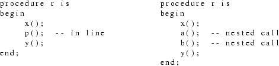
Fig. 5.1 Example of nested procedure calls
Nested calls may subsequently be put in line too
(probably resulting in a yet deeper nesting level, etc.). So
the call-list does not always reflect the source program,
but changes dynamically, as decisions are made. If a call to
p is expanded, all calls appearing in p will be added to the
call-list.
A convenient and elegant way to represent the call-list is
to use a LISP-like list. [Poel72a] Calls that appear at the
same level are linked in the CDR direction. If a call C to a
procedure p is expanded, all calls appearing in p are put in
a sub-list of C, i.e. in its CAR. In the example above,
before the decision to expand the call to p is made, the
call-list of procedure r looks like:
(call-to-x, call-to-p, call-to-y)
After the decision, it looks like:
(call-to-x, (call-to-p*, call-to-a, call-to-b), call-to-y)
The call to p is marked, because it has been substituted. Whenever IL wants to traverse the call-list of some procedure, it uses the well-known LISP technique of recursion in the CAR direction and iteration in the CDR direction (see page 1.19-2 of [Poel72a] ). All list traversals look like:
traverse(list)
{
for (c = first(list); c != 0; c = CDR(c)) {
if (c is marked) {
traverse(CAR(c));
} else {
do something with c
}
}
}
The entire call-list consists of a number of LISP-like lists, one for every procedure. The proctable entry of a procedure contains a pointer to the beginning of the list.
The tasks of the first subphase are to determine several attributes of every procedure and to construct the basic call-list, i.e. without nested calls. The size of a procedure is determined by simply counting its EM instructions. Pseudo instructions are skipped. A procedure does not ’fall through’ if its CFG contains a basic block that is not the last block of the CFG and that ends on a RET instruction. The formal parameters of a procedure are determined by inspection of its code.
The call-list in constructed by looking at all CAL instructions appearing in the program. The call-list should only contain calls to procedures that may be put in line. This fact is only known if the procedure was analyzed earlier. If a call to a procedure p appears in the program before the body of p, the call will always be put in the call-list. If p is later found to be unsuitable, the call will be removed from the list by the second subphase.
An important issue is the recognition of the actual
parameter expressions of the call. The front ends produces
messages telling how many bytes of formal parameters every
procedure accesses. (If there is no such message for a
procedure, it cannot be put in line). The actual parameters
together must account for the same number of bytes.A
recursive descent parser is used to parse side-effect free
EM expressions. It uses a table and some auxiliary routines
to determine how many bytes every EM instruction pops from
the stack and how many bytes it pushes onto the stack. These
numbers depend on the EM instruction, its argument, and the
wordsize and pointersize of the target machine. Initially,
the parser has to recognize the number of bytes specified in
the formals-message, say N. Assume the first instruction
before the CAL pops S bytes and pushes R bytes. If R > N,
too many bytes are recognized and the parser fails. Else, it
calls itself recursively to recognize the S bytes used as
operand of the instruction. If it succeeds in doing so, it
continues with the next instruction, i.e. the first
instruction before the code recognized by the recursive
call, to recognize N-R more bytes. The result is a number of
EM instructions that collectively push N bytes. If an
instruction is come across that has side-effects (e.g. a
store or a procedure call) or of which R and S cannot be
computed statically (e.g. a LOS), it fails.
Note that the parser traverses the code backwards. As EM
code is essentially postfix code, the parser works top
down.
If the parser fails to recognize the parameters, the call will not be substituted in line. If the parameters can be determined, they still have to match the formal parameters of the called procedure. This check is performed by the second subphase; it cannot be done here, because it is possible that the called procedure has not been analyzed yet.
The entire call-list is written to a file, to be processed by the second subphase.
The task of the second subphase is quite easy to understand. It reads the call-list file, builds an incore call-list and deletes every call that may not be expanded in line (either because the called procedure may not be put in line, or because the actual parameters of the call do not match the formal parameters of the called procedure). It assigns a pay-off to every call, indicating how desirable it is to expand it.
The subphase repeatedly scans the call-list and takes
the call with the highest ratio. The chosen one gets marked,
and the call-list is extended with the nested calls, as
described above. These nested calls are also assigned a
ratio, and will be considered too during the next scans.
After every decision the number of times every procedure is
called is updated, using the call-count information.
Meanwhile, the subphase keeps track of the amount of space
left available. If all space is used, or if there are no
more calls left to be expanded, it exits this loop. Finally,
calls to procedures that are called only once are also
chosen.
The actual parameters of a call are only needed by this subphase to assign a ratio to a call. To save some space, these actuals are not kept in main memory. They are removed after the call has been read and a ratio has been assigned to it. So this subphase works with abstracts of calls. After all work has been done, the actual parameters of the chosen calls are retrieved from a file, as they are needed by the transformation subphase.
The third subphase makes the actual modifications to the EM text. It is directed by the decisions made in the previous subphase, as expressed via the call-list. The call-list read by this subphase contains only calls that were selected for expansion. The list is ordered in the same way as the EM text, i.e. if a call C1 appears before a call C2 in the call-list, C1 also appears before C2 in the EM text. So the EM text is traversed linearly, the calls that have to be substituted are determined and the modifications are made. If a procedure is come across that is no longer needed, it is simply not written to the output EM file. The substitution of a call takes place in distinct steps:
change the calling sequence
|
The actual parameter expressions are changed. Parameters that are put in line are removed. All remaining ones must store their result in a temporary local variable, rather than push it on the stack. The CAL instruction and any ASP (to pop actual parameters) or LFR (to fetch the result of a function) are deleted. |
fetch the text of the called procedure
|
Direct disk access is used to to read the text of the called procedure. The file offset is obtained from the proctable entry. |
allocate bytes for locals and temporaries
|
The local variables of the called procedure will be put in the stack frame of the calling procedure. The same applies to any temporary variables that hold the result of parameters that were not put in line. The proctable entry of the caller is updated. |
put a label after the CAL
|
If the called procedure contains a RET (return) instruction somewhere in the middle of its text (i.e. it does not fall through), the RET must be changed into a BRA (branch), to jump over the remainder of the text. This label is not needed if the called procedure falls through. |
copy the text of the called procedure and modify it
|
References to local variables of the called routine and to parameters that are not put in line are changed to refer to the new local of the caller. References to in line parameters are replaced by the actual parameter expression. Returns (RETs) are either deleted or replaced by a BRA. Messages containing information about local variables or parameters are changed. Global data declarations and the PRO and END pseudos are removed. Instruction labels and references to them are changed to make sure they do not have the same identifying number as labels in the calling procedure. |
insert the modified text
|
The pseudos of the called procedure are put after the pseudos of the calling procedure. The real text of the callee is put at the place where the CAL was. |
take care of nested substitutions
|
The expanded procedure may contain calls that have to be expanded too (nested calls). If the descriptor of this call contains actual parameter expressions, the code of the expressions has to be changed the same way as the code of the callee was changed. Next, the entire process of finding CALs and doing the substitutions is repeated recursively. |
The sources of IL are in the following files and packages (the prefixes 1_, 2_ and 3_ refer to the three subphases):
|
il.h: |
declarations of global variables and data structures |
|
il.c: |
the routine main; the driving routines of the three subphases |
|
1_anal: |
contains a subroutine that analyzes a procedure |
|
1_cal: |
contains a subroutine that analyzes a call |
|
1_aux: |
implements auxiliary procedures used by subphase 1 |
|
2_aux: |
implements auxiliary procedures used by subphase 2 |
|
3_subst: |
the driving routine for doing the substitution |
|
3_change: |
lower level routines that do certain modifications |
|
3_aux: |
implements auxiliary procedures used by subphase 3 |
|
aux: |
implements auxiliary procedures used by several subphases. |
The Strength Reduction optimization technique (SR) tries to replace expensive operators by cheaper ones, in order to decrease the execution time of the program. A classical example is replacing a ’multiplication by 2’ by an addition or a shift instruction. These kinds of local transformations are already done by the EM Peephole Optimizer. Strength reduction can also be applied more generally to operators used in a loop.

Fig. 6.1 An example of Strenght Reduction
In Fig. 6.1, a multiplication inside a loop is replaced by an addition inside the loop and a multiplication outside the loop. Clearly, this is a global optimization; it cannot be done by a peephole optimizer.
In some cases a related technique, test
replacement, can be used to eliminate the loop variable
i. This technique will not be discussed in this report.
In the example above, the resulting code can be further
optimized by using constant propagation. Obviously, this is
not the task of the Strength Reduction phase.
In this section we will describe the transformations performed by Strength Reduction (SR). Before doing so, we will introduce the central notion of an induction variable.
SR looks for variables whose values form an arithmetic progression at the beginning of a loop. These variables are called induction variables. The most frequently occurring example of such a variable is a loop-variable in a high-order programming language. Several quite sophisticated models of strength reduction can be found in the literature. [Cock77a, Alle81a, Lowr69a, Aho78a] In these models the notion of an induction variable is far more general than the intuitive notion of a loop-variable. The definition of an induction variable we present here is more restricted, yielding a simpler model and simpler transformations. We think the principle source for strength reduction lies in expressions using a loop-variable, i.e. a variable that is incremented or decremented by the same amount after every loop iteration, and that cannot be changed in any other way.
Of course, the EM code does not contain high level constructs such as for-statements. We will define an induction variable in terms of the Intermediate Code of the optimizer. Note that the notions of a loop in the EM text and of a firm basic block were defined in section 3.3.5.
definition
An induction variable i of a loop L is a local variable that
is never accessed indirectly, whose size is the word size of
the target machine, and that is assigned exactly once within
L, the assignment:
|
- |
being of the form i := i + c or i := c +i, c is a constant called the step value of i. |
|
- |
occurring in a firm block of L. |
(Note that the first restriction on the assignment is not described in terms of the Intermediate Code; we will give such a description later; the current definition is easier to understand however).
SR recognizes certain expressions using an induction variable and replaces them by cheaper ones. Two kinds of expensive operations are recognized: multiplication and array address computations. The expressions that are simplified must use an induction variable as an operand of a multiplication or as index in an array expression.
Often a linear function of an induction variable is used, rather than the variable itself. In these cases optimization is still possible. We call such expressions iv-expressions.
definition:
An iv-expression of an induction variable i of a loop L is
an expression that:
|
- |
uses only the operators + and - (unary as well as binary) |
|
- |
uses i as operand exactly once |
|
- |
uses (besides i) only constants or variables that are never changed in L as operands. |
The expressions recognized by SR are of the following forms:
|
(1) |
iv_expression * constant |
|
(2) |
constant * iv_expression |
|
(3) |
A[iv-expression] := (assign to array element) |
|
(4) |
A[iv-expression] (use array element) |
|
(5) |
& A[iv-expression] (take address of array element) |
(Note that EM has different instructions to use an array
element, store into one, or take the address of one, resp.
LAR, SAR, and AAR).
The size of the elements of A must be known statically. In
cases (3) and (4) this size must equal the word size of the
target machine.
With every recognized expression we associate a new temporary local variable TMP, allocated in the stack frame of the procedure containing the expression. At any program point within the loop, TMP will contain the following value:
|
multiplication: |
the current value of iv-expression * constant |
|
arrays: |
the current value of &A[iv-expression]. |
In the second case, TMP essentially is a pointer
variable, pointing to the element of A that is currently in
use.
If the same expression occurs several times in the loop, the
same temporary local is used each time.
Three transformations are applied to the EM text:
|
(1) |
TMP is initialized with the right value. This initialization takes place just before the loop. |
|
(2) |
The recognized expression is simplified. |
|
(3) |
TMP is incremented; this takes place just after the induction variable is incremented. |
For multiplication, the initial value of TMP is the value of the recognized expression at the program point immediately before the loop. For arrays, TMP is initialized with the address of the first array element that is accessed. So the initialization code is:
TMP := iv-expression * constant; or
TMP := &A[iv-expression]
At the point immediately before the loop, the induction variable will already have been initialized, so the value used in the code above will be the value it has during the first iteration.
For multiplication, the recognized expression can simply be replaced by TMP. For array optimizations, the replacement depends on the form:
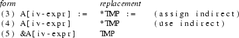
The ’*’ denotes the indirect operator. (Note that EM has different instructions to do an assign-indirect and a use-indirect). As the size of the array elements is restricted to be the word size in case (3) and (4), only one EM instruction needs to be generated in all cases.
The amount by which TMP is incremented is:
|
multiplication: |
step value * constant |
|
arrays: |
step value * element size |
Note that the step value (see definition of induction variable above), the constant, and the element size (see previous section) can all be determined statically. If the sign of the induction variable in the iv-expression is negative, the amount must be negated.
The transformations are demonstrated by an example.

Fig. 6.2 Example of complex Strength Reduction transformations
The expression ’(6-i)*5’ is recognized twice. The constant is 5. The step value is -3. The sign of i in the recognized expression is ’-’. So the increment value of TMP is -(-3*5) = +15.
Like most phases, SR deals with one procedure at a time. Within a procedure, SR works on one loop at a time. Loops are processed in textual order. If loops are nested inside each other, SR starts with the outermost loop and proceeds in the inwards direction. This order is chosen, because it enables the optimization of multi-dimensional array address computations, if the elements are accessed in the usual way (i.e. row after row, rather than column after column). For every loop, SR first detects all induction variables and then tries to recognize expressions that can be optimized.
The process of finding induction variables can conveniently be split up into two parts. First, the EM text of the loop is scanned to find all candidate induction variables, which are word-sized local variables that are assigned precisely once in the loop, within a firm block. Second, for every candidate, the single assignment is inspected, to see if it has the form required by the definition of an induction variable.
Candidates are found by scanning the EM code of the loop. During this scan, two sets are maintained. The set "cand" contains all variables that were assigned exactly once so far, within a firm block. The set "dismiss" contains all variables that should not be made a candidate. Initially, both sets are empty. If a variable is assigned to, it is put in the cand set, if three conditions are met:
|
1. |
the variable was not in cand or dismiss already |
|
2. |
the assignment takes place in a firm block |
|
3. |
the assignment is not a ZRL instruction (assignment by zero) or a SDL instruction (store double local). |
If any condition fails, the variable is dismissed from
cand (if it was there already) and put in dismiss (if it was
not there already).
All variables for which no register message was generated
(i.e. those variables that may be accessed indirectly) are
assumed to be changed in the loop.
All variables that remain in cand are candidate induction
variables.
From the set of candidates, the induction variables can be determined, by inspecting the single assignment. The assignment must match one of the EM patterns below. (’x’ is the candidate. ’ws’ is the word size of the target machine.

From the patterns the step size of the induction variable can also be determined. These step sizes are displayed on the right hand side.
For every induction variable we maintain the following information:
|
- |
the offset of the variable in the stackframe of its procedure |
|
- |
a pointer to the EM text of the assignment statement |
|
- |
the step value |
If any induction variables of the loop were found, the EM text of the loop is scanned again, to detect expressions that can be optimized. SR scans for multiplication and array instructions. Whenever it finds such an instruction, it analyses the code in front of it. If an expression is to be optimized, it must be generated by the following syntax rules.

An ’address’ is an EM instruction that loads an address on the stack. An instruction like LOL may be an ’address’, if the size of an address (pointer size, =ps) is the same as the word size. If the pointer size is twice the word size, instructions like LDL are an ’address’. (The addresses in the third grammar rule denote resp. the array address and the array descriptor address).

The notion of an iv-expression was introduced earlier.

An iv_expression must satisfy one additional constraint: it must use exactly one operand that is an induction variable. A simple, hand written, top-down parser is used to recognize an iv-expression. It scans the EM code from right to left (recall that EM is essentially postfix). It uses semantic attributes (inherited as well as derived) to check the additional constraint.
All information assembled during the recognition process is put in a ’code_info’ structure. This structure contains the following information:
|
- |
the optimizable code itself |
|
- |
the loop and basic block the code is part of |
|
- |
the induction variable |
|
- |
the iv-expression |
|
- |
the sign of the induction variable in the iv-expression |
|
- |
the offset and size of the temporary local variable |
-
|
the expensive operator (MLI, LAR etc.) |
|
- |
the instruction that loads the constant (for multiplication) or the array descriptor (for arrays). |
The entire transformation process is driven by this
information. As the EM text is represented internally as a
list, this process consists mainly of straightforward list
manipulations.
The initialization code must be put immediately before the
loop entry. For this purpose a header block is
created that has the loop entry block as its only successor
and that dominates the entry block. The CFG and all
relations (SUCC,PRED, IDOM, LOOPS etc.) are updated.
An EM instruction that will replace the optimizable code is
created and put at the place of the old code. The list
representing the old optimizable code is used to create a
list for the initializing code, as they are similar. Only
two modifications are required:
|
- |
if the expensive operator is a LAR or SAR, it must be replaced by an AAR, as the initial value of TMP is the address of the first array element that is accessed. |
|
- |
code must be appended to store the result of the expression in TMP. |
Finally, code to increment TMP is created and put after the code of the single assignment to the induction variable. The generated code uses either an integer addition (ADI) or an integer-to-pointer addition (ADS) to do the increment.
SR maintains a set of all expressions that have already been recognized in the present loop. Such expressions are said to be available. If an expression is recognized that is already available, no new temporary local variable is allocated for it, and the code to initialize and increment the local is not generated.
The sources of SR are in the following files and packages:
|
sr.h: |
declarations of global variables and data structures |
|
sr.c: |
the routine main; a driving routine to process (possibly nested) loops in the right order |
|
iv |
implements a procedure that finds the induction variables of a loop |
|
reduce |
implements a procedure that finds optimizable expressions and that does the transformations |
|
cand |
implements a procedure that finds the candidate induction variables; used to implement iv |
|
xform |
implements several useful routines that transform lists of EM text or a CFG; used to implement reduce |
|
expr |
implements a procedure that parses iv-expressions |
|
aux |
implements several auxiliary procedures. |
The Common Subexpression Elimination optimization technique (CS) tries to eliminate multiple computations of EM expressions that yield the same result. It places the result of one such computation in a temporary variable, and replaces the other computations by a reference to this temporary variable. The primary goal of this technique is to decrease the execution time of the program, but in general it will save space too.
As an example of the application of Common Subexpression Elimination, consider the piece of program in Fig. 7.1(a).

Fig. 7.1 Examples of Common Subexpression Elimination
If neither a nor b is changed in CODE, the instructions can be replaced by those of Fig. 7.1(b), which saves one multiplication, but costs an extra store instruction. If the value of x is not changed in CODE either, the instructions can be replaced by those of Fig. 7.1(c). In this case the extra store is not needed.
In the following sections we will describe which transformations are done by CS and how this phase was implemented.
In this section we will describe the window through which CS examines the code, the expressions recognized by CS, and finally the changes made to the code.
The CS algorithm is applied to the largest sequence of textually adjacent basic blocks B1,..,Bn, for which
PRED(Bj) = {Bj-1}, j = 2,..,n.
Intuitively, this window consists of straight line code, with only one entry point (at the beginning); it may contain jumps, which should all have their targets outside the window. This is illustrated in Fig. 7.2.
|
(1) |
|||||
|
(2) |
(3) |
Fig. 7.2 The working window of CS
Line (2) can only be executed after line (1). Likewise, line (3) can only be executed after line (2). Both a and b have the same values at line (1) and at line (3).
Larger windows were avoided. In Fig. 7.3, the value of a at line (4) may have been obtained at more than one point.
|
(1) |
||||
|
(2) |
||||
|
(3) |
||||
|
(4) |
Fig. 7.3 Several working windows
The computations eliminated by CS need not be normal expressions (like "a * b"), but can even consist of a single operand that is expensive to access, such as an array element or a record field. If an array element is used, its address is computed implicitly. CS is able to eliminate either the element itself or its address, whichever one is most profitable. A variable of a textually enclosing procedure may also be expensive to access, depending on the lexical level difference.
CS creates a new temporary local variable (TMP) for every eliminated expression, unless it is able to use an existing local variable. It emits code to initialize this variable with the result of the expression. Most recurrences of the expression can simply be replaced by a reference to TMP. If the address of an array element is recognized as a common subexpression, references to the element itself are replaced by indirect references through TMP (see Fig. 7.4).
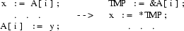
Fig. 7.4 Elimination of an array address computation
Here, ’&’ is the ’address of’ operator, and unary ’*’ is the indirection operator. (Note that EM actually has different instructions to do a use-indirect or an assign-indirect.)
To determine whether two expressions have the same result, there must be some way to determine whether their operands have the same values. We use a system of value numbers [Kenn81a] in which each distinct value of whatever type, created or used within the working window, receives a unique identifying number, its value number. Two items have the same value number if and only if, based only upon information from the instructions in the window, their values are provably identical. For example, after processing the statement
a := 4;
the variable a and the constant 4 have the same value number.
The value number of the result of an expression depends only on the kind of operator and the value number(s) of the operand(s). The expressions need not be textually equal, as shown in Fig. 7.5.

Fig. 7.5 Different expressions with the same value number
At line (1) a receives the same value number as c. At line (2) d receives the same value number as b. At line (4) the expression "c * d" receives the same value number as the expression "a * b" at line (2), because the value numbers of their left and right operands are the same, and the operator (*) is the same.
As another example of the value number method, consider Fig. 7.6.

Fig. 7.6 Identical expressions with the different value numbers
Although textually the expressions "a * b" in line 1 and line 3 are equal, a will have different value numbers at line 3 and line 1. The two expressions will not mistakenly be recognized as equivalent.
The Value Number Method distinguishes between operators and operands. The value numbers of operands are stored in a table, called the symbol table. The value number of a subexpression depends on the (root) operator of the expression and on the value numbers of its operands. A table of "available expressions" is used to do this mapping.
CS recognizes the following kinds of EM operands, called entities:
- constant
- local variable
- external variable
- indirectly accessed entity
- offsetted entity
- address of local variable
- address of external variable
- address of offsetted entity
- address of local base
- address of argument base
- array element
- procedure identifier
- floating zero
- local base
- heap pointer
- ignore mask
Whenever a new entity is encountered in the working window, it is entered in the symbol table and given a brand new value number. Most entities have attributes (e.g. the offset in the current stackframe for local variables), which are also stored in the symbol table.
An entity is called static if its value cannot be changed (e.g. a constant or an address).
Common subexpressions are recognized by simulating the behaviour of the EM machine. The EM code is parsed from left to right; as EM is postfix code, this is a bottom up parse. At any point the current state of the EM runtime stack is reflected by a simulated "fake stack", containing descriptions of the parsed operands and expressions. A descriptor consists of:
(1) the value number of the operand or expression
(2) the size of the operand or expression
(3) a pointer to the first line of EM-code
that constitutes the operand or expression
Note that operands may consist of several EM instructions. Whenever an operator is encountered, the descriptors of its operands are on top of the fake stack. The operator and the value numbers of the operands are used as indices in the table of available expressions, to determine the value number of the expression.
During the parsing process, we keep track of the first line of each expression; we need this information when we decide to eliminate the expression.
An entity is assigned a value number when it is used for the first time in the working window. If the entity is used as left hand side of an assignment, it gets the value number of the right hand side. Sometimes the effects of an instruction on an entity cannot be determined exactly; the current value and value number of the entity may become inconsistent. Hence the current value number must be forgotten. This is achieved by giving the entity a new value number that was not used before. The entity is said to be killed.
As information is lost when an entity is killed, CS tries to save as many entities as possible. In case of an indirect assignment through a pointer, some analysis is done to see which variables cannot be altered. For a procedure call, the interprocedural information contained in the procedure table is used to restrict the set of entities that may be changed by the call. Local variables for which the front end generated a register message can never be changed by an indirect assignment or a procedure call.
When a new expression comes available, it is checked whether its result is saved in a local that may go in a register. The last line of the expression must be followed by a STL or SDL instruction (depending on the size of the result) and a register message must be present for this local. If there is such a local, it is recorded in the available expressions table. Each time a new occurrence of this expression is found, the value number of the local is compared against the value number of the result. If they are different the local cannot be used and is forgotten.
The available expressions are linked in a list. New expressions are linked at the head of the list. In this way expressions that are contained within other expressions appear later in the list, because EM-expressions are postfix. The elimination process walks through the list, starting at the head, to find the largest expressions first. If an expression is eliminated, any expression later on in the list, contained in the former expression, is removed from the list, as expressions can only be eliminated once.
A STL or SDL is emitted after the first occurrence of the expression, unless there was an existing local variable that could hold the result.
Although the global optimizer works on EM code, the goal is to improve the quality of the object code. Therefore some machine-dependent information is needed to decide whether it is desirable to eliminate a given expression. Because it is impossible for the CS phase to know exactly what code will be generated, some heuristics are used. CS essentially looks for some special cases that should not be eliminated. These special cases can be turned on or off for a given machine, as indicated in a machine descriptor file.
Some operators can sometimes be translated into an addressing mode for the machine at hand. Such an operator is only eliminated if its operand is itself expensive, i.e. it is not just a simple load. The machine descriptor file contains a set of such operators.
Eliminating the loading of the Local Base or the Argument Base by the LXL resp. LXA instruction is only beneficial if the difference in lexical levels exceeds a certain threshold. The machine descriptor file contains this threshold.
Replacing a SAR or a LAR by an AAR followed by a LOI may possibly increase the size of the object code. We assume that this is only possible when the size of the array element is greater than some limit.
There are back ends that can very efficiently translate the index computing instruction sequence LOC SLI ADS. If this is the case, the SLI instruction between a LOC and an ADS is not eliminated.
To handle unforseen cases, the descriptor file may also contain a set of operators that should never be eliminated.
After these preparatory explanations, the algorithm itself is easy to understand. For each instruction within the current window, the following steps are performed in the given order :
|
1. |
Check if this instruction defines an entity. If so, the set of entities is updated accordingly. |
|
2. |
Kill all entities that might be affected by this instruction. |
|
3. |
Simulate the instruction on the fake-stack. If this instruction is an operator, update the list of available expressions accordingly. |
The result of this process is a list of available expressions plus the information needed to eliminate them. Expressions that are desirable to eliminate are eliminated. Next, the window is shifted and the process is repeated.
In this section we will discuss the implementation of the CS phase. We will first describe the basic actions that are undertaken by the algorithm, than the algorithm itself.
There are over 100 EM instructions. For our purpose we partition this huge set into groups of instructions which can be more or less conveniently handled together.
There are groups for all sorts of load instructions: simple loads, expensive loads, loads of an array element. A load is considered expensive when more than one EM instructions are involved in loading it. The load of a lexical entity is also considered expensive. For instance: LOF is expensive, LAL is not. LAR forms a group on its own, because it is not only an expensive load, but also implicitly includes the ternary operator AAR, which computes the address of the array element.
There are groups for all sorts of operators: unary, binary, and ternary. The groups of operators are further partitioned according to the size of their operand(s) and result.
There are groups for all sorts of stores: direct, indirect, array element. The SAR forms a group on its own for the same reason as appeared with LAR.
The effect of the remaining instructions is less clear. They do not help very much in parsing expressions or in constructing our pseudo symboltable. They are partitioned according to the following criteria:
|
- |
They change the value of an entity without using the stack (e.g. ZRL, DEE). |
|
- |
They are subroutine calls (CAI, CAL). |
|
- |
They change the stack in some irreproduceable way (e.g. ASP, LFR, DUP). |
|
- |
They have no effect whatever on the stack or on the entities. This does not mean they can be deleted, but they can be ignored for the moment (e.g. MES, LIN, NOP). |
|
- |
Their effect is too complicate too compute, so we just assume worst case behaviour. Hopefully, they do not occur very often. (e.g. MON, STR, BLM). |
|
- |
They signal the end of the basic block (e.g. BLT, RET, TRP). |
To recognize expressions, we simulate the behaviour of the EM machine, by means of a fake-stack. When we scan the instructions in sequential order, we first encounter the instructions that load the operands on the stack, and then the instruction that indicates the operator, because EM expressions are postfix. When we find an instruction to load an operand, we load on the fake-stack a struct with the following information:

In most cases, (3) will point to the line that loaded the operand (e.g. LOL, LOC), i.e. there is only one line that refers to this operand, but sometimes some information must be popped to load the operand (e.g. LOI, LAR). This information must have been pushed before, so we also pop a pointer to the first line that pushed the information. This line is now the first line that defines the operand.
When we find the operator instruction, we pop its operand(s) from the fake-stack. The first line that defines the first operand is now the first line of the expression. We now have all information to determine whether the just parsed expression has occurred before. We also know the first and last line of the expression; we need this when we decide to eliminate it. Associated with each available expression is a set of which the elements contains the first and last line of a recurrence of this expression.
Not only will the operand(s) be popped from the fake-stack, but the following will be pushed:

In this way an item on the fake-stack always contains the necessary information. EM expressions are parsed bottum up.
As said before, we build our private "symboltable", while scanning the EM-instructions. The behaviour of the EM-machine is not only reflected in the fake-stack, but also in the entities. When an entity is created, we do not yet know its value, so we assign a brand new value number to it. Each time a store-instruction is encountered, we change the value number of the target entity of this store to the value number of the token that was popped from the fake-stack. Because entities may overlap, we must also "forget" the value numbers of entities that might be affected by this store. Each such entity will be killed, i.e. assigned a brand new valuenumber.
Because we lose information when we forget the value number of an entity, we try to save as much entities as possible. When we store into an external, we don’t have to kill locals and vice versa. Furthermore, we can see whether two locals or two externals overlap, because we know the offset from the local base, resp. the offset within the data block, and the size. The situation becomes more complicated when we have to consider indirection. The worst case is that we store through an unknown pointer. In that case we kill all entities except those locals for which a so-called register message has been generated; this register message indicates that this local can never be accessed indirectly. If we know this pointer we can be more careful. If it points to a local then the entity that is accessed through this pointer can never overlap with an external. If it points to an external this entity can never overlap with a local. Furthermore, in the latter case, we can find the data block this entity belongs to. Since pointer arithmetic is only defined within a data block, this entity can never overlap with entities that are known to belong to another data block.
Not only after a store-instruction but also after a subroutine-call it may be necessary to kill entities; the subroutine may affect global variables or store through a pointer. If a subroutine is called that is not available as EM-text, we assume worst case behaviour, i.e. we kill all entities without register message.
When a new expression comes available, we check whether the result is saved in a local that may go in a register. The last line of the expression must be followed by a STL or SDL instruction, depending on the size of the result (resp. WS and 2*WS), and a register message must be present for this local. If we have found such a local, we store a pointer to it with the available expression. Each time a new occurrence of this expression is found, we compare the value number of the local against the value number of the result. When they are different we remove the pointer to it, because we cannot use it.
The available expressions are singly linked in a list. When a new expression comes available, we link it at the head of the list. In this way expressions that are contained within other expressions appear later in the list, because EM-expressions are postfix. When we are going to eliminate expressions, we walk through the list, starting at the head, to find the largest expressions first. When we decide to eliminate an expression, we look at the expressions in the tail of the list, starting from where we are now, to delete expressions that are contained within the chosen one because we cannot eliminate an expression more than once.
When we are going to eliminate expressions, and we do not have a local that holds the result, we emit a STL or SDL after the line where the expression was first found. The other occurrences are simply removed, unless they contain instructions that not only have effect on the stack; e.g. messages, stores, calls. Before each instruction that needs the result on the stack, we emit a LOL or LDL. When the expression was an AAR, but the instruction was a LAR or a SAR, we append a LOI resp. a STI of the number of bytes in an array-element after each LOL/LDL.
Although the global optimizer works on EM code, the goal is to improve the quality of the object code. Therefore we need some machine dependent information to decide whether it is desirable to eliminate a given expression. Because it is impossible for the CS phase to know exactly what code will be generated, we use some heuristics. In most cases it will save time when we eliminate an operator, so we just do it. We only look for some special cases.
Some operators can in some cases be translated into an addressing mode for the machine at hand. We only eliminate such an operator, when its operand is itself "expensive", i.e. not just a simple load. The user of the CS phase has to supply a set of such operators.
Eliminating the loading of the Local Base or the Argument Base by the LXL resp. LXA instruction is only beneficial when the number of lexical levels we have to go back exceeds a certain threshold. This threshold will be different when registers are saved by the back end. The user must supply this threshold.
Replacing a SAR or a LAR by an AAR followed by a LOI may possibly increase the size of the object code. We assume that this is only possible when the size of the array element is greater than some (user-supplied) limit.
There are back ends that can very efficiently translate the index computing instruction sequence LOC SLI ADS. If this is the case, we do not eliminate the SLI instruction between a LOC and an ADS.
To handle unforeseen cases, the user may also supply a set of operators that should never be eliminated.
After these preparatory explanations, we can be short about the algorithm itself. For each instruction within our window, the following steps are performed in the order given:
|
1. |
We check if this instructin defines an entity. If this is the case the set of entities is updated accordingly. |
|
2. |
We kill all entities that might be affected by this instruction. |
|
3. |
The instruction is simulated on the fake-stack. Copy propagation is done. If this instruction is an operator, we update the list of available expressions accordingly. |
When we have processed all instructions this way, we have built a list of available expressions plus the information we need to eliminate them. Those expressions of which desirability analysis tells us so, we eliminate. The we shift our window and continue.
The sources of CS are in the following files and packages:
|
cs.h |
declarations of global variables and data structures |
|
cs.c |
the routine main; a driving routine to process the basic blocks in the right order |
|
vnm |
implements a procedure that performs the value numbering on one basic block |
|
eliminate |
implements a procedure that does the transformations, if desirable |
|
avail |
implements a procedure that manipulates the list of available expressions |
|
entity |
implements a procedure that manipulates the set of entities |
|
getentity |
implements a procedure that extracts the pseudo symboltable information from EM-instructions; uses a small table |
|
kill |
implements several routines that find the entities that might be changed by EM-instructions and kill them |
|
partition |
implements several routines that partition the huge set of EM-instructions into more or less manageable, more or less logical chunks |
|
profit |
implements a procedure that decides whether it is advantageous to eliminate an expression; also removes expressions with side-effects |
|
stack |
implements the fake-stack and operations on it |
|
alloc |
implements several allocation routines |
|
aux |
implements several auxiliary routines |
|
debug |
implements several routines to provide debugging and verbose output |
The "Stack Pollution" optimization technique (SP) decreases the costs (time as well as space) of procedure calls. In the EM calling sequence, the actual parameters are popped from the stack by the calling procedure. The ASP (Adjust Stack Pointer) instruction is used for this purpose. A call in EM is shown in Fig. 8.1
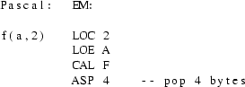
Fig. 8.1 An example procedure call in Pascal and EM
As procedure calls occur often in most programs, the ASP is one of the most frequently used EM instructions.
The main intention of removing the actual parameters after a procedure call is to avoid the stack size to increase rapidly. Yet, in some cases, it is possible to delay or even avoid the removal of the parameters without letting the stack grow significantly. In this way, considerable savings in code size and execution time may be achieved, at the cost of a slightly increased stack size.
A stack adjustment may be delayed if there is some other stack adjustment later on in the same basic block. The two ASPs can be combined into one.

Fig. 8.2 An example of local Stack Pollution
The stacksize will be increased only temporarily. If the basic block contains another ASP, the ASP 10 may subsequently be combined with that next ASP, and so on.
For some back ends, a stack adjustment also takes place at the point of a procedure return. There is no need to specify the number of bytes to be popped at a return. This provides an opportunity to remove ASPs more globally. If all ASPs outside any loop are removed, the increase of the stack size will still only be small, as no such ASP is executed more than once without an intervening return from the procedure it is part of.
This second approach is not generally applicable to all target machines, as some back ends require the stack to be cleaned up at the point of a procedure return.
There is one main problem the implementation has to solve. In EM, the stack is not only used for passing parameters, but also for evaluating expressions. Hence, ASP instructions can only be combined or removed if certain conditions are satisfied.
Two consecutive ASPs of one basic block can only be combined (as described above) if:
|
1. |
On no point of text in between the two ASPs, any item is popped from the stack that was pushed onto it before the first ASP. |
|
2. |
The number of bytes popped from the stack by the second ASP must equal the number of bytes pushed since the first ASP. |
Condition 1. is not satisfied in Fig. 8.3.

Fig. 8.3 An illegal transformation
If the first ASP were removed (delayed), the first ADI would add 10 and f(10), instead of 5 and f(10).
Condition 2. is not satisfied in Fig. 8.4.
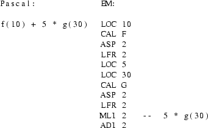
Fig. 8.4 A second illegal transformation
If the two ASPs were combined into one ’ASP 4’, the constant 5 would have been popped, rather than the parameter 10 (so ’10 + f(10)*g(30)’ would have been computed).
The second approach to deleting ASPs (i.e. let the procedure return do the stack clean-up) is only applied to the last ASP of every basic block. Any preceding ASPs are dealt with by the first approach. The last ASP of a basic block B will only be removed if:
|
- |
on no path in the control flow graph from B to any block containing a RET (return) there is a basic block that, at some point of its text, pops items from the stack that it has not itself pushed earlier. |
Clearly, if this condition is satisfied, no harm can be done; no other basic block will ever access items that were pushed on the stack before the ASP.
The number of bytes pushed onto or popped from the stack can be easily encoded in a so called "pop-push table". The numbers in general depend on the target machine word- and pointer size and on the argument given to the instruction. For example, an ADS instruction is described by:
-a-p+p
which means: an ’ADS n’ first pops an n-byte value (n being the argument), next pops a pointer-size value and finally pushes a pointer-size value. For some infrequently used EM instructions the pop-push numbers cannot be computed statically.
The stack pollution algorithm first performs a depth first search over the control flow graph and marks all blocks that do not satisfy the global condition. Next it visits all basic blocks in turn. For every pair of adjacent ASPs, it checks conditions 1. and 2. and combines the ASPs if they are satisfied. The new ASP may be used as first ASP in the next pair. If a condition fails, it simply continues with the next ASP. Finally, the last ASP is removed if:
|
- |
nothing has been popped from the stack after the last ASP that was pushed before it |
|
- |
the block was not marked by the depth first search |
|
- |
the block is not in a loop |
The "Cross Jumping" optimization technique (CJ) [Wulf75a] is basically a space optimization technique. It looks for pairs of basic blocks (B1,B2), for which:
SUCC(B1) = SUCC(B2) = {S}
(So B1 and B2 both have one and the same successor). If the last few non-branch instructions are the same for B1 and B2, one such sequence can be eliminated.
Pascal:
if cond then
S1
S3
else
S2
S3
(pseudo) EM:

Fig. 9.1 An example of Cross Jumping
As the basic blocks have the same successor, at least one of them ends in an unconditional branch instruction (BRA). Hence no extra branch instruction is ever needed, just the target of an existing branch needs to be changed; neither the program size nor the execution time will ever increase. In general, the execution time will remain the same, unless further optimizations can be applied because of this optimization.
This optimization is particularly effective, because it cannot always be done by the programmer at the source level, as demonstrated by the Fig. 8.2.
if cond then
x := f(4)
else
x := g(5)
EM:
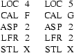
Fig. 9.2 Effectiveness of Cross Jumping
At the source level there is no common tail, but at the EM level there is a common tail.
The implementation of cross jumping is rather straightforward. The technique is applied to one procedure at a time. The control flow graph of the procedure is scanned for pairs of basic blocks with the same (single) successor and with common tails. Note that there may be more than two such blocks (e.g. as the result of a case statement). This is dealt with by repeating the entire process until no further optimizations can de done for the current procedure.
If a suitable pair of basic blocks has been found, the control flow graph must be altered. One of the basic blocks must be split into two. The control flow graphs before and after the optimization are shown in Fig. 9.3 and Fig. 9.4.
-------- --------
| | | |
| S1 | | S2 |
| S3 | | S3 |
| | | |
-------- --------
| |
|------------------|--------------------|
|
v
Fig. 9.3 CFG before optimization
-------- --------
| | | |
| S1 | | S2 |
| | | |
-------- --------
| |
|--------------------<------------------|
v
--------
| |
| S3 |
| |
--------
|
v
Fig. 9.4 CFG after optimization
Some attributes of the three resulting blocks (such as immediate dominator) are updated.
In some cases, cross jumping might split the computation of an expression into two, by inserting a branch somewhere in the middle. Most code generators will generate very poor assembly code when presented with such EM code. Therefor, cross jumping is not performed in these cases.
The Branch Optimization phase (BO) performs two related (branch) optimizations.
If two basic blocks B1 and B2 have the following properties:
SUCC(B1) = {B2}
PRED(B2) = {B1}
then B1 and B2 can be combined into one basic block. If B1 ends in an unconditional jump to the beginning of B2, this jump can be eliminated, hence saving a little execution time and object code size. This technique can be used to eliminate some deficiencies introduced by the front ends (for example, the "C" front end translates switch statements inefficiently due to its one pass nature).
The straightforward way to translate a while loop is to put the test for loop termination at the beginning of the loop.
while cond loop LAB1: Test cond
body of the loop ---> Branch On False To LAB2
end loop code for body of loop
Branch To LAB1
LAB2:
Fig. 10.1 Example of Branch Optimization
If the condition fails at the Nth iteration, the following code gets executed (dynamically):

An alternative translation is:
Branch To LAB2
LAB1:
code for body of loop
LAB2:
Test cond
Branch On True To LAB1
This translation results in the following profile:

So the second translation will be significantly faster if N >> 2. If N=2, execution time will be slightly increased. On the average, the program will be speeded up. Note that the code sizes of the two translations will be the same.
The basic block fusion technique is implemented by traversing the control flow graph of a procedure, looking for basic blocks B with only one successor (S). If one is found, it is checked if S has only one predecessor (which has to be B). If so, the two basic blocks can in principle be combined. However, as one basic block will have to be moved, the textual order of the basic blocks will be altered. This reordering causes severe problems in the presence of conditional jumps. For example, if S ends in a conditional branch, the basic block that comes textually next to S must stay in that position. So the transformation in Fig. 10.2 is illegal.
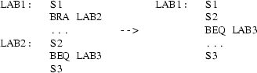
Fig. 10.2 An illegal transformation of Branch Optimization
If B is moved towards S the same problem occurs if the block before B ends in a conditional jump. The problem could be solved by adding one extra branch, but this would reduce the gains of the optimization to zero. Hence the optimization will only be done if the block that follows S (in the textual order) is not a successor of S. This condition assures that S does not end in a conditional branch. The condition always holds for the code generated by the "C" front end for a switch statement.
After the transformation has been performed, some attributes of the basic blocks involved (such as successor and predecessor sets and immediate dominator) must be recomputed.
The while-loop technique is applied to one loop at a time. The list of basic blocks of the loop is traversed to find a block B that satisfies the following conditions:
|
1. |
the textually next block to B is not part of the loop |
|
2. |
the last instruction of B is an unconditional branch; hence B has only one successor, say S |
|
3. |
the textually next block of B is a successor of S |
|
4. |
the last instruction of S is a conditional branch |
If such a block B is found, the control flow graph is changed as depicted in Fig. 10.3.
| |
| v
v |
|-----<------| ----->-----|
____|____ | |
| | | |-------| |
| S1 | | | v |
| Bcc | | | .... |
|--| | | | |
| --------- | | ----|---- |
| | | | | |
| .... ^ | | S2 | |
| | | | | |
| --------- | | | | |
v | | | ^ --------- |
| | S2 | | | | |
| | BRA | | | |-----<-----
| | | | | v
| --------- | | ____|____
| | | | | |
| ------>------ | | S1 |
| | | Bnn |
|-------| | | |
| | ----|----
v | |
|----<--|
|
v
Fig. 10.3 Transformation of the CFG by Branch Optimization
The "Use-Definition analysis" phase (UD) consists of two related optimization techniques that both depend on "Use-Definition" information. The techniques are Copy Propagation and Constant Propagation. They are best explained via an example (see Figs. 11.1 and 11.2).
(1) A := B A := B
(2) use(A) use(B)
Fig. 11.1 An example of Copy Propagation
(1) A := 12 A := 12
(2) use(A) use(12)
Fig. 11.2 An example of Constant Propagation
Both optimizations have to check that the value of A at line (2) can only be obtained at line (1). Copy Propagation also has to assure that the value of B is the same at line (1) as at line (2).
One purpose of both transformations is to introduce
opportunities for the Dead Code Elimination optimization. If
the variable A is used nowhere else, the assignment A := B
becomes useless and can be eliminated.
If B is less expensive to access than A (e.g. this is
sometimes the case if A is a local variable and B is a
global variable), Copy Propagation directly improves the
code itself. If A is cheaper to access the transformation
will not be performed. Likewise, a constant as operand may
be cheeper than a variable. Having a constant as operand may
also facilitate other optimizations.
The design of UD is based on the theory described in section 14.1 and 14.3 of. [Aho78a] As a main departure from that theory, we do not demand the statement A := B to become redundant after Copy Propagation. If B is cheaper to access than A, the optimization is always performed; if B is more expensive than A, we never do the transformation. If A and B are equally expensive UD uses the heuristic rule to replace infrequently used variables by frequently used ones. This rule increases the chances of the assignment to become useless.
In the next section we will give a brief outline of the data flow theory used for the implementation of UD.
A definition of a variable A is an assignment to A. A definition is said to reach a point p if there is a path in the control flow graph from the definition to p, such that A is not redefined on that path.
For every basic block B, we define the following sets:
|
GEN[b] |
the set of definitions in b that reach the end of b. |
|
KILL[b] |
the set of definitions outside b that define a variable that is changed in b. |
|
IN[b] |
the set of all definitions reaching the beginning of b. |
|
OUT[b] |
the set of all definitions reaching the end of b. |
GEN and KILL can be determined by inspecting the code of the procedure. IN and OUT are computed by solving the following data flow equations:
(1) OUT[b] = IN[b] - KILL[b] + GEN[b]
(2) IN[b] = OUT[p1] + ... + OUT[pn],
A copy is a definition of the form "A := B". A copy is said to be generated in a basic block n if it occurs in n and there is no subsequent assignment to B in n. A copy is said to be killed in n if:
|
(i) |
it occurs in n and there is a subsequent assignment to B within n, or |
|
(ii) |
it occurs outside n, the definition A := B reaches the beginning of n and B is changed in n (note that a copy also is a definition). |
A copy reaches a point p, if there are no assignments to B on any path in the control flow graph from the copy to p.
We define the following sets:
|
C_GEN[b] |
the set of all copies in b generated in b. |
|
C_KILL[b] |
the set of all copies killed in b. |
|
C_IN[b] |
the set of all copies reaching the beginning of b. |
|
C_OUT[b] |
the set of all copies reaching the end of b. |
C_IN and C_OUT are computed by solving the following equations: (root is the entry node of the current procedure; ’*’ denotes set intersection)
(1) C_OUT[b] = C_IN[b] - C_KILL[b] + C_GEN[b]
(2) C_IN[b] = C_OUT[p1] * ... * C_OUT[pn],
C_IN[root] = {all copies}
The theory outlined above assumes that variables can only be changed by a direct assignment. This condition does not hold for EM. In case of an assignment through a pointer variable, it is in general impossible to see which variable is affected by the assignment. Similar problems occur in the presence of procedure calls. Therefore we distinguish two kinds of definitions:
|
- |
an explicit definition is a direct assignment to one specific variable |
|
- |
an implicit definition is the potential alteration of a variable as a result of a procedure call or an indirect assignment. |
An indirect assignment causes implicit definitions to all variables that may be accessed indirectly, i.e. all local variables for which no register message was generated and all global variables. If a procedure contains an indirect assignment it may change the same set of variables, else it may change some global variables directly. The KILL, GEN, IN and OUT sets contain explicit as well as implicit definitions.
UD first builds a number of tables:
|
locals: |
contains information about the local variables of the current procedure (offset,size,whether a register message was found for it and, if so, the score field of that message) |
|
defs: |
a table of all explicit definitions appearing in the current procedure. |
|
copies: |
a table of all copies appearing in the current procedure. |
Every variable (local as well as global), definition and copy is identified by a unique number, which is the index in the table. All tables are constructed by traversing the EM code. A fourth table, "vardefs" is used, indexed by a ’variable number’, which contains for every variable the set of explicit definitions of it. Also, for each basic block b, the set CHGVARS containing all variables changed by it is computed.
The GEN sets are obtained in one scan over the EM text, by analyzing every EM instruction. The KILL set of a basic block b is computed by looking at the set of variables changed by b (i.e. CHGVARS[b]). For every such variable v, all explicit definitions to v (i.e. vardefs[v]) that are not in GEN[b] are added to KILL[b]. Also, the implicit defininition of v is added to KILL[b]. Next, the data flow equations for use-definition information are solved, using a straight forward, iterative algorithm. All sets are represented as bitvectors, so the operations on sets (union, difference) can be implemented efficiently.
The C_GEN and C_KILL sets are computed simultaneously in one scan over the EM text. For every copy A := B appearing in basic block b we do the following:
|
1. |
for every basic block n /= b that changes B, see if the definition A := B reaches the beginning of n (i.e. check if the index number of A := B in the "defs" table is an element of IN[n]); if so, add the copy to C_KILL[n] |
|
2. |
if B is redefined later on in b, add the copy to C_KILL[b], else add it to C_GEN[b] |
C_IN and C_OUT are computed from C_GEN and C_KILL via the second set of data flow equations.
Finally, in one last scan all opportunities for optimization are detected. For every use u of a variable A, we check if there is a unique explicit definition d reaching u.
If the definition is a copy A := B and B has the same value at d as at u, then the use of A at u may be changed into B. The latter condition can be verified as follows:
|
- |
if u and d are in the same basic block, see if there is any assignment to B in between d and u |
|
- |
if u and d are in different basic blocks, the condition is satisfied if there is no assignment to B in the block of u prior to u and d is in C_IN[b]. |
Before the transformation is actually done, UD first makes sure the alteration is really desirable, as described before. The information needed for this purpose (access costs of local and global variables) is read from a machine descriptor file.
If the only definition reaching u has the form "A := constant", the use of A at u is replaced by the constant.
The sources of UD are in the following files and packages:
|
ud.h: |
declarations of global variables and data structures |
|
ud.c: |
the routine main; initialization of target machine dependent tables |
|
defs: |
routines to compute the GEN and KILL sets and routines to analyse EM instructions |
|
const: |
routines involved in constant propagation |
|
copy: |
routines involved in copy propagation |
|
aux: |
contains auxiliary routines |
The "Live-Variable analysis" optimization technique (LV) performs some code improvements and computes information that may be used by subsequent optimizations. The main task of this phase is the computation of live-variable information. [Aho78a section 14.4] A variable A is said to be dead at some point p of the program text, if on no path in the control flow graph from p to a RET (return), A can be used before being changed; else A is said to be live.
A statement of the form
VARIABLE := EXPRESSION
is said to be dead if the left hand side variable is dead just after the statement and the right hand side expression has no side effects (i.e. it doesn’t change any variable). Such a statement can be eliminated entirely. Dead code will seldom be present in the original program, but it may be the result of earlier optimizations, such as copy propagation.
Live-variable information is passed to other phases via messages in the EM code. Live/dead messages are generated at points in the EM text where variables become dead or live. This information is especially useful for the Register Allocation phase.
The implementation uses algorithm 14.6 of. [Aho78a] First two sets DEF and USE are computed for every basic block b:
|
DEF(b) |
the set of all variables that are assigned a value in b before being used |
|
USE(b) |
the set of all variables that may be used in b before being changed. |
(So variables that may, but need not, be used resp. changed via a procedure call or through a pointer are included in USE but not in DEF). The next step is to compute the sets IN and OUT :
|
IN[b] |
the set of all variables that are live at the beginning of b |
|
OUT[b] |
the set of all variables that are live at the end of b |
IN and OUT can be computed for all blocks simultaneously by solving the data flow equations:
(1) IN[b] = OUT[b] - DEF[b] + USE[b]
[2] OUT[b] = IN[s1] + ... + IN[sn] ;
The equations are solved by a similar algorithm as for the Use Definition equations (see previous chapter).
Finally, each basic block is visited in turn to remove its dead code and to emit the live/dead messages. Every basic block b is traversed from its last instruction backwards to the beginning of b. Initially, all variables that are dead at the end of b are marked dead. All others are marked live. If we come across an assignment to a variable X that was marked live, a live-message is put after the assignment and X is marked dead; if X was marked dead, the assignment may be removed, provided that the right hand side expression contains no side effects. If we come across a use of a variable X that was marked dead, a dead-message is put after the use and X is marked live. So at any point, the mark of X tells whether X is live or dead immediately before that point. A message is also generated at the start of a basic block for every variable that was live at the end of the (textually) previous block, but dead at the entry of this block, or v.v.
Only local variables are considered. This significantly reduces the memory needed by this phase, eases the implementation and is hardly less efficient than considering all variables. (Note that it is very hard to prove that an assignment to a global variable is dead).
The efficient usage of the general purpose registers of the target machine plays a key role in any optimizing compiler. This subject, often referred to as Register Allocation, has great impact on both the code generator and the optimizing part of such a compiler. The code generator needs registers for at least the evaluation of arithmetic expressions; the optimizer uses the registers to decrease the access costs of frequently used entities (such as variables). The design of an optimizing compiler must pay great attention to the cooperation of optimization, register allocation and code generation.
Register allocation has received much attention in literature (see [Leve81a, Chai81a, Frei74a] and [Site79a]).
We will first describe the major design decisions of the Amsterdam Compiler Kit, as far as they concern register allocation. Subsequently we will outline the role of the Global Optimizer in the register allocation process and the interface between the code generator and the optimizer.
Registers are used for two purposes:
|
1. |
for the evaluation of arithmetic expressions |
|
2. |
to hold local variables, for the duration of the procedure they are local to. |
It is essential to note that no translation part of the compilers, except for the code generator, knows anything at all about the register set of the target computer. Hence all decisions about registers are ultimately made by the code generator. Earlier phases of a compiler can only advise the code generator.
The code generator splits the register set into two: a fixed part for the evaluation of expressions (called scratch registers) and a fixed part to store local variables. This partitioning, which depends only on the target computer, significantly reduces the complexity of register allocation, at the penalty of some loss of code quality.
The code generator has some (machine-dependent) knowledge of the access costs of memory locations and registers and of the costs of saving and restoring registers. (Registers are always saved by the called procedure). This knowledge is expressed in a set of procedures for each target machine. The code generator also knows how many registers there are and of which type they are. A register can be of type pointer, floating point or general.
The front ends of the compilers determine which local variables may be put in a register; such a variable may never be accessed indirectly (i.e. through a pointer). The front end also determines the types and sizes of these variables. The type can be any of the register types or the type loop variable, which denotes a general-typed variable that is used as loop variable in a for-statement. All this information is collected in a register message in the EM code. Such a message is a pseudo EM instruction. This message also contains a score field, indicating how desirable it is to put this variable in a register. A front end may assign a high score to a variable if it was declared as a register variable (which is only possible in some languages, such as "C"). Any compiler phase before the code generator may change this score field, if it has reason to do so. The code generator bases its decisions on the information contained in the register message, most notably on the score.
If the global optimizer is not used, the score fields are set by the Peephole Optimizer. This optimizer simply counts the number of occurrences of every local (register) variable and adds this count to the score provided by the front end. In this way a simple, yet quite effective register allocation scheme is achieved.
The Global Optimizer essentially tries to improve the scheme outlined above. It uses the following principles for this purpose:
|
- |
Entities are not always assigned a register for the duration of an entire procedure; smaller regions of the program text may be considered too. |
|
- |
several variables may be put in the same register simultaneously, provided at most one of them is live at any point. |
|
- |
besides local variables, other entities (such as constants and addresses of variables and procedures) may be put in a register. |
|
- |
more accurate cost estimates are used. |
To perform its task, the optimizer must have some knowledge of the target machine.
The RA phase of the optimizer must somehow be able to express its decisions. Such decisions may look like: ’put constant 1283 in a register from line 12 to line 40’. To be precise, RA must be able to tell the code generator to:
|
- |
initialize a register with some value |
|
- |
update an entity from a register |
|
- |
replace all occurrences of an entity in a certain region of text by a reference to the register. |
At least three problems occur here: the code generator is only used to put local variables in registers, it only assigns a register to a variable for the duration of an entire procedure and it is not used to have some earlier compiler phase make all the decisions.
All problems are solved by one mechanism, that involves no changes to the code generator. With every (non-scratch) register R that will be used in a procedure P, we associate a new variable T, local to P. The size of T is the same as the size of R. A register message is generated for T with an exceptionally high score. The scores of all original register messages are set to zero. Consequently, the code generator will always assign precisely those new variables to a register. If the optimizer wants to put some entity, say the constant 1283, in a register, it emits the code "T := 1283" and replaces all occurrences of ’1283’ by T. Similarly, it can put the address of a procedure in T and replace all calls to that procedure by indirect calls. Furthermore, it can put several different entities in T (and thus in R) during the lifetime of P.
In principle, the code generated by the optimizer in this way would always be valid EM code, even if the optimizer would be presented a totally wrong description of the target computer register set. In practice, it would be a waste of data as well as text space to allocate memory for these new variables, as they will always be assigned a register (in the correct order of events). Hence, no memory locations are allocated for them. For this reason they are called pseudo local variables.
The RA phase deals with one procedure at a time. For every procedure, it first determines which entities may be put in a register. Such an entity is called an item. For every item it decides during which parts of the procedure it might be assigned a register. Such a region is called a timespan. For any item, several (possibly overlapping) timespans may be considered. A pair (item,timespan) is called an allocation. If the items of two allocations are both live at some point of time in the intersections of their timespans, these allocations are said to be rivals of each other, as they cannot be assigned the same register. The rivals-set of every allocation is computed. Next, the gains of assigning a register to an allocation are estimated, for every allocation. With all this information, decisions are made which allocations to store in which registers (packing). Finally, the EM text is transformed to reflect these decisions.
RA tries to put the following entities in a register:
|
- |
a local variable for which a register message was found |
|
- |
the address of a local variable for which no register message was found |
|
- |
the address of a global variable |
|
- |
the address of a procedure |
|
- |
a numeric constant. |
Only the address of a global variable may be put in a register, not the variable itself. This approach avoids the very complex problems that would be caused by procedure calls and indirect pointer references (see [Aho78a sections 14.7 and 14.8] and [Spil71a]). Still, on most machines accessing a global variable using indirect addressing through a register is much cheaper than accessing it via its address. Similarly, if the address of a procedure is put in a register, the procedure can be called via an indirect call.
With every item we associate a register type. This type is
for local variables: the type contained in the register message
for addresses of variables and procedures: the pointer type
for constants: the general type
An entity other than a local variable is not taken to be an item if it is used only once within the current procedure.
An item is said to be live at some point of the program text if its value may be used before it is changed. As addresses and constants are never changed, all items but local variables are always live. The region of text during which a local variable is live is determined via the live/dead messages generated by the Live Variable analysis phase of the Global Optimizer.
If a procedure has more items than registers, it may be advantageous to put an item in a register only during those parts of the procedure where it is most heavily used. Such a part will be called a timespan. With every item we may associate a set of timespans. If two timespans of an item overlap, at most one of them may be granted a register, as there is no use in putting the same item in two registers simultaneously. If two timespans of an item are distinct, both may be chosen; the item will possibly be put in two different registers during different parts of the procedure. The timespan may also consist of the whole procedure.
A list of (item,timespan) pairs (allocations) is build, which will be the input to the decision making subphase of RA (packing subphase). This allocation list is the main data structure of RA. The description of the remainder of RA will be in terms of allocations rather than items. The phrase "to assign a register to an allocation" means "to assign a register to the item of the allocation for the duration of the timespan of the allocation". Subsequent subphases will add more information to this list.
Several factors must be taken into account when a timespan for an item is constructed:
|
1. |
At any entry point of the timespan where the item is live, the register must be initialized with the item |
|
2. |
At any exit point of the timespan where the item is live, the item must be updated. |
In order to decrease these costs, we will only consider timespans with one entry point and no live exit points.
As stated before, several different items may be put in the same register, provided they are not live simultaneously. For every allocation we determine the intersection of its timespan and the lifetime of its item (i.e. the part of the procedure during which the item is live). The allocation is said to be busy during this intersection. If two allocations are ever busy simultaneously they are said to be rivals of each other. The rivals information is added to the allocation list.
To make good decisions, the packing subphase needs to know which allocations can be assigned the same register (rivals information) and how much is gained by granting an allocation a register.
Besides the gains of using a register instead of an item, two kinds of overhead costs must be taken into account:
|
- |
the register must be initialized with the item |
|
- |
the register must be saved at procedure entry and restored at procedure exit. |
The latter costs should not be due to a single allocation, as several allocations can be assigned the same register. These costs are dealt with after packing has been done. They do not influence the decisions of the packing algorithm, they may only undo them.
The actual profits consist of improvements of execution time and code size. As the former is far more difficult to estimate , we will discuss code size improvements first.
The gains of putting a certain item in a register depends on how the item is used. Suppose the item is a pointer variable. On machines that do not have a double-indirect addressing mode, two instructions are needed to dereference the variable if it is not in a register, but only one if it is put in a register. If the variable is not dereferenced, but simply copied, one instruction may be sufficient in both cases. So the gains of putting a pointer variable in a register are higher if the variable is dereferenced often.
To make accurate estimates, detailed knowledge of the target machine and of the code generator would be needed. Therefore, a simplification has been made that substantially limits the amount of target machine information that is needed. The estimation of the number of bytes saved does not take into account how an item is used. Rather, an average number is used. So these gains are computed as follows:
#bytes_saved = #occurrences * gains_per_occurrence
The number of occurrences is derived from the EM code. Note that this is not exact either, as there is no one-to-one correspondence between occurrences in the EM code and in the assembler code.
The gains of one occurrence depend on:
|
1. |
the type of the item |
|
2. |
the size of the item |
|
3. |
the type of the register |
and for local variables and addresses of local variables:
|
4. |
the type of the local variable |
|
5. |
the offset of the variable in the stackframe |
For every allocation we try two types of registers: the register type of the item and the general register type. Only the type with the highest profits will subsequently be used. This type is added to the allocation information.
To compute the gains, RA uses a machine-dependent table that is read from a machine descriptor file. By means of this table the number of bytes saved can be computed as a function of the five properties.
The costs of initializing a register with an item is determined in a similar way. The cost of one initialization is also obtained from the descriptor file. Note that there can be at most one initialization for any allocation.
To summarize, the number of bytes a certain allocation would save is computed as follows:
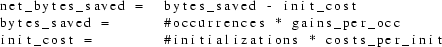
It is inherently more difficult to estimate the execution time saved by putting an item in a register, because it is impossible to predict how many times an item will be used dynamically. If an occurrence is part of a loop, it may be executed many times. If it is part of a conditional statement, it may never be executed at all. In the latter case, the speed of the program may even get worse if an initialization is needed. As a clear example, consider the piece of "C" code in Fig. 13.1.
switch(expr) {
case 1: p(); break;
case 2: p(); p(); break;
case 3: p(); break;
default: break;
}
Fig. 13.1 A "C" switch statement
Lots of bytes may be saved by putting the address of procedure p in a register, as p is called four times (statically). Dynamically, p will be called zero, one or two times, depending on the value of the expression.
The optimizer uses the following strategy for optimizing execution time:
|
1. |
try to put items in registers during loops first |
|
2. |
always keep the initializing code outside the loop |
|
3. |
if an item is not used in a loop, do not put it in a register if the initialization costs may be higher than the gains |
The latter condition can be checked by determining the minimal number of usages (dynamically) of the item during the procedure, via a shortest path algorithm. In the example above, this minimal number is zero, so the address of p is not put in a register.
The costs of one occurrence is estimated as described above for the code size. The number of dynamic occurrences is guessed by looking at the loop nesting level of every occurrence. If the item is never used in a loop, the minimal number of occurrences is used. From these facts, the execution time improvement is assessed for every allocation.
The packing subphase takes as input the allocation list and outputs a description of which allocations should be put in which registers. So it is essentially the decision making part of RA.
The packing system tries to assign a register to allocations one at a time, in some yet to be defined order. For every allocation A, it first checks if there is a register (of the right type) that is already assigned to one or more allocations, none of which are rivals of A. In this case A is assigned the same register. Else, A is assigned a new register, if one exists. A table containing the number of free registers for every type is maintained. It is initialized with the number of non-scratch registers of the target computer and updated whenever a new register is handed out. The packing algorithm stops when no more allocations can or need be assigned a register.
After an allocation A has been packed, all allocations with non-disjunct timespans (including A itself) are removed from the allocation list.
In case the number of items exceeds the number of registers, it is important to choose the most profitable allocations. Due to the possibility of having several allocations occupying the same register, this problem is quite complex. Our packing algorithm uses simple heuristic rules and avoids any combinatorial search. It has distinct rules for different costs measures.
If object code size is the most important factor, the algorithm is greedy and chooses allocations in decreasing order of their profits attribute. It does not take into account the fact that other allocations may be passed over because of this decision.
If execution time is at prime stake, the algorithm first considers allocations whose timespans consist of loops. After all these have been packed, it considers the remaining allocations. Within the two subclasses, it considers allocations with the highest profits first. When assigning a register to an allocation with a loop as timespan, the algorithm checks if the item has already been put in a register during another loop. If so, it tries to use the same register for the new allocation. After all packing has been done, it checks if the item has always been assigned the same register (although not necessarily during all loops). If so, it tries to put the item in that register during the entire procedure. This is possible if the allocation (item,whole_procedure) is not a rival of any allocation with a different item that has been assigned to the same register. Note that this approach is essentially ’bottom up’, as registers are first assigned over small regions of text which are later collapsed into larger regions. The advantage of this approach is the fact that the decisions for one loop can be made independently of all other loops.
After the entire packing process has been completed, we compute for each register how much is gained in using this register, by simply adding the net profits of all allocations assigned to it. This total yield should outweigh the costs of saving/restoring the register at procedure entry/exit. As most modern processors (e.g. 68000, Vax) have special instructions to save/restore several registers, the differential costs of saving one extra register are by no means constant. The costs are read from the machine descriptor file and compared to the total yields of the registers. As a consequence of this analysis, some allocations may have their registers taken away.
The final subphase of RA transforms the EM text according to the decisions made by the packing system. It traverses the text of the currently optimized procedure and changes all occurrences of items at points where they are assigned a register. It also clears the score field of the register messages for normal local variables and emits register messages with a very high score for the pseudo locals. At points where registers have to be initialized with items, it generates EM code to do so. Finally it tries to decrease the size of the stackframe of the procedure by looking at which local variables need not be given memory locations.
The sources of RA are in the following files and packages:
|
ra.h: |
declarations of global variables and data structures |
|
ra.c: |
the routine main; initialization of target machine-dependent tables |
|
items: |
a routine to build the list of items of one procedure; routines to manipulate items |
|
lifetime: |
contains a subroutine that determines when items are live/dead |
|
alloclist: |
contains subroutines that build the initial allocations list and that compute the rivals sets. |
|
profits: |
contains a subroutine that computes the profits of the allocations and a routine that determines the costs of saving/restoring registers |
|
pack: |
contains the packing subphase |
|
xform: |
contains the transformation subphase |
|
interval: |
contains routines to manipulate intervals of time |
|
aux: |
contains auxiliary routines |
The "Compact Assembly generation phase" (CA) transforms the intermediate code of the optimizer into EM code in Compact Assembly Language (CAL) format. In the intermediate code, all program entities (such as procedures, labels, global variables) are denoted by a unique identifying number (see 3.5). In the CAL output of the optimizer these numbers have to be replaced by normal identifiers (strings). The original identifiers of the input program are used whenever possible. Recall that the IC phase generates two files that can be used to map unique identifying numbers to procedure names and global variable names. For instruction labels CA always generates new names. The reasons for doing so are:
|
- |
instruction labels are only visible inside one procedure, so they can not be referenced in other modules |
|
- |
the names are not very suggestive anyway, as they must be integer numbers |
|
- |
the optimizer considerably changes the control structure of the program, so there is really no one to one mapping of instruction labels in the input and the output program. |
As the optimizer combines all input modules into one module, visibility problems may occur. Two modules M1 and M2 can both define an identifier X (provided that X is not externally visible in any of these modules). If M1 and M2 are combined into one module M, two distinct entities with the same name would exist in M, which is not allowed. [Tane83a, section 11.1.4.3] In these cases, CA invents a new unique name for one of the entities.
CA first reads the files containing the procedure and global variable names and stores the names in two tables. It scans these tables to make sure that all names are different. Subsequently it reads the EM text, one procedure at a time, and outputs it in CAL format. The major part of the code that does the latter transformation is adapted from the EM Peephole Optimizer.
The main problem of the implementation of CA is to assure that the visibility rules are obeyed. If an identifier must be externally visible (i.e. it was externally visible in the input program) and the identifier is defined (in the output program) before being referenced, an EXA or EXP pseudo must be generated for it. (Note that the optimizer may change the order of definitions and references, so some pseudos may be needed that were not present in the input program). On the other hand, an identifier may be only internally visible. If such an identifier is referenced before being defined, an INA or INP pseudo must be emitted prior to its first reference.
The author would like to thank Andy Tanenbaum for his guidance, Duk Bekema for implementing the Common Subexpression Elimination phase and writing the initial documentation of that phase, Dick Grune for reading the manuscript of this report and Ceriel Jacobs, Ed Keizer, Martin Kersten, Hans van Staveren and the members of the S.T.W. user’s group for their interest and assistance.
|
a. |
|
b. |
Aho74a.
|
A.V. Aho, J.E. Hopcroft, and J.D. Ullman, The Design and Analysis of Computer Algorithms, Addison-Wesley, Reading, Massachusetts (1974). |
Aho78a.
|
A.V. Aho and J.D. Ullman, Principles of compiler design, Addison-Wesley, Reading, Massachusetts (1978). |
Alle81a.
|
F.E. Allen, J. Cocke, and K. Kennedy, “Reduction of Operator Strength” in Program Flow Analysis, ed. S.S. Muchnick and D. Jones, Prentice-Hall, Englewood Cliffs, N.J. (1981). |
Ankl82a.
|
P. Anklam, D. Cutler, R. Heinen, and M. MacLaren, Engineering a compiler: Vax-11 code generation and optimization, Digital Equipment Corporation (1982). |
Bal86a.
|
H.E. Bal and A.S. Tanenbaum, “Language- and Machine-independent Global Optimization on Intermediate Code,” Computer Languages, 11, 2, pp. 105-121 (April 1986). |
Ball79a.
|
J.E. Ball, “Predicting the Effects of Optimization on a Procedure Body,” SIGPLAN Notices, 14, 8, pp. 214-220 (August 1979). |
Cart77a.
|
J.L. Carter, “A Case Study of a New Code Generation Technique for Compilers,” CACM, 20, 12, pp. 914-920 (December 1977). |
Cart82a.
|
L.R. Carter, An analysis of Pascal Programs, UMI Research Press, Ann Arbor, Michigan (1982). |
Chai81a.
|
G.J. Chaitin, M.A. Auslander, A.K. Chandra, J. Cocke, M.E. Hopkins, and P.W. Markstein, “Register Allocation via Coloring,” Computer Languages, 6, 1, pp. 47-57 (January 1981). |
Cock77a.
|
J. Cocke and K. Kennedy, “An algorithm for Reduction of Operator Strength,” CACM, 20, 11, pp. 850-856 (November 1977). |
Davi81a.
|
J.W. Davidson, “Simplifying Code Generation Through Peephole Optimization,” Ph.D. thesis, Dept. of Computer Science, Univ. of Arizona (December 1981). |
Faim80a.
|
R.N. Faiman and A.A. Kortesoja, “An Optimizing Pascal Compiler,” IEEE Trans. on Softw. Eng., 6, 6, pp. 512-518 (November 1980). |
Frei74a.
|
R.A. Freiburghouse, “Register Allocation Via Usage Counts,” CACM, 17, 11, pp. 638-642 (November 1974). |
Freu83a.
|
S.M. Freudenberger and J.T. Schwartz, “Experience with the SETL Optimizer,” TOPLAS, 5, 1, pp. 26-45 (Januari 1983). |
Harr79a.
|
W.H. Harrison, “A New Strategy for Code Generation - the General-Purpose Optimizing Compiler,” IEEE Trans. on Softw. Eng., 5, 4, pp. 367-373 (July 1979). |
Ichb83a.
|
J.D. Ichbiah, “Ada Programming Language - MILITARY STANDARD,” ANSI/MIL-STD-1815A, U.S. Department of Defense (22 January 1983). |
Ichb79a.
|
J.D. Ichbiah, “Rationale for the Design of the Ada Programming Language,” SIGPLAN Notices, 14, 6 (June 1979). |
John81a.
|
S.C. Johnson and D.M. Ritchie, The C Language Calling Sequence, Bell Laboratories, Murray Hill, New Jersey (September 1981). |
Katk73a.
|
G.R. Katkus, “A study of selective optimization techniques,” Ph.D. Thesis, University of Southern California (1973). |
Kenn81a.
|
K. Kennedy, “A Survey of Data Flow Analysis Techniques” in Program Flow Analysis, ed. S.S. Muchnick and D. Jones, Prentice-Hall, Englewood Cliffs (1981). |
Kern79a.
|
B.W. Kernighan and M.D. McIlroy, Unix programmer’s manual, Seventh Edition, 1, Bell Laboratories, Murray Hill, New Jersey (January 1979). |
Kirc83a.
|
W. Kirchgaesner, J. Uhl, G. Winterstein, G. Goos, M. Dausmann, and S. Drossopoulou, An Optimizing Ada Compiler, Institut fur Informatik II, Universitat Karlsruhe (February 1983). |
Leng79a.
|
T. Lengauer and R.E. Tarjan, “A Fast Algorithm for Finding Dominators in a Flowgraph,” TOPLAS, 1, 1, pp. 121-141 (July 1979). |
Leve81a.
|
B.W. Leverett, “Register Allocation in Optimizing Compilers,” Ph.D. Thesis, CMU-CS-81-103, Carnegie-Mellon University, Pittsburgh (February 1981). |
Leve79a.
|
B.W. Leverett, R.G.G Cattell, S.O. Hobbs, J.M. Newcomer, A.H. Reiner, B.R. Schatz, and W.A. Wulf, “An Overview of the Production-Quality Compiler-Compiler Project,” CMU-CS-79-105, Carnegie-Mellon University, Pittsburgh (1979). |
Leve80a.
|
B.W. Leverett, R.G.G Cattell, S.O. Hobbs, J.M. Newcomer, A.H. Reiner, B.R. Schatz, and W.A. Wulf, “An Overview of the Production-Quality Compiler-Compiler Project,” IEEE Computer, 13, 8, pp. 38-49 (August 1980). |
Lowr69a.
|
E.S. Lowry and C.W. Medlock, “Object Code Optimization,” CACM, 12, 1, pp. 13-22 (Januari 1969). |
Mint79a.
|
R.J. Mintz, G.A. Fisher, and M. Sharir, “The design of a global optimizer,” SIGPLAN Notices, 14, 9, pp. 226-234 (September 1979). |
More79a.
|
E. Morel and C. Renvoise, “Global Optimization by Suppression of Partial Redundancies,” CACM, 22, 2, pp. 96-103 (February 1979). |
Perk79a.
|
D.R. Perkins and R.L. Sites, “Machine-independent Pascal code optimization,” SIGPLAN Notices, 14, 8, pp. 201-207 (August 1979). |
Phot81a.
|
D.S. Photopoulos, “Optimal mixed code generation for microcomputers,” Ph.D. Thesis, Northeastern University (1981). |
Poel72a.
|
W.L. van der Poel, The Programming Languages LISP and TRAC, Technische Hogeschool Delft, Delft (1972). |
Prab80a.
|
B. Prabhala and R. Sethi, “Efficient Computation of Expressions with Common Subexpressions,” JACM, 27, 1, pp. 146-163 (Januari 1980). |
Purd72a.
|
P.W. Purdom and E.F. Moore, “Immediate Predominators in a Directed Graph,” CACM, 15, 8, pp. 777-778 (August 1972). |
Ritc78a.
|
D.M. Ritchie, The C Programming Language - Reference Manual, Bell Laboratories, Murray Hill, New Jersey (1978). |
Sche77a.
|
R.W. Scheifler, “An Analysis of Inline Substitution for a Structured Programming Language,” CACM, 20, 9, pp. 647-654 (September 1977). |
Seth70a.
|
R. Sethi and J.D. Ullman, “The Generation of Optimal Code for Arithmetic Expressions,” JACM, 17, 4, pp. 715-728 (October 1970). |
Shaf78a.
|
J.B. Shaffer, “Automatic subroutine generation in an optimizing compiler,” Ph.D. Thesis, University of Maryland (1978). |
Site79a.
|
R.L. Sites, “Machine-independent register allocation,” SIGPLAN Notices, 14, 8, pp. 221-225 (August 1979). |
Spil71a.
|
T.C. Spillman, “Exposing side-effects in a PL/I optimizing compiler” in Information Processing 1971, pp. 376-381, North-Holland Publishing Company, Amsterdam (1971). |
Tane83a.
|
A.S. Tanenbaum, H. van Staveren, E.G. Keizer, and J.W. Stevenson, “Description of a machine architecture for use with block structured languages,” Rapport nr IR-81, Vrije Universiteit, Amsterdam (August 1983). |
Tane81a.
|
A.S. Tanenbaum, H. van Staveren, E.G. Keizer, and J.W. Stevenson, “A Practical Toolkit for Making Portable Compilers,” Rapport nr IR-74, Vrije Universiteit, Amsterdam (October 1981). |
Tane83b.
|
A.S. Tanenbaum, H. van Staveren, E.G. Keizer, and J.W. Stevenson, “A Practical Toolkit for Making Portable Compilers,” CACM, 26, 9, pp. 654-660 (September 1983). |
Wulf75a.
|
W.A. Wulf, R.K. Johnsson, C.B. Weinstock, S.O. Hobbs, and C.M. Geschke, The Design of an Optimizing Compiler, American Elsevier Publishing Company, New York (1975). |
Wulf80a.
|
W.M. Wulf, “PQCC: A Machine-Relative Compiler Technology,” CMU-CS-80-144, Carnegie-Mellon University, Pittsburgh (25 september 1980). |